4 混合模拟的积分方法
4.1 引言
结构动力学问题中产生的线性和非线性运动方程通常通过应用数值时间步进积分算法来求解。多年来，已经开发了大量方法来数值求解结构动力学和其他工程学科中的问题。然而，许多这些方法不太适合在混合模拟测试期间推进求解，因为它们是专门为纯分析问题开发的。因此，混合模拟中的一个研究领域一直专注于开发更适合在分析部分和试验部分混合和交互时获得可靠解的专用直接积分方法。
在对结构动力学问题的空间和时间离散化进行简要介绍之后，本章首先介绍了混合模拟可靠、准确和快速执行所需的特殊积分方案特性。还讨论了显式、隐式、非迭代和迭代方法的优缺点及其在不同问题类型中的应用。然后总结了几种现有方法，包括它们的推导、精度、稳定性和实现。最后，本章介绍了一些现有方法的新颖修改，以及将经典Runge-Kutta方法等几种替代时间步进积分算法应用于混合模拟。重要的是要注意，混合模拟的时间步进积分方法不是上一章介绍的软件框架的一部分，而是需要由有限元分析软件提供或实现。
4.2 结构动力学问题
4.2.1 空间离散化
结构在离散自由度处的运动方程的推导始于写出无限小体的平衡方程，包括惯性力。这导致结构动力学问题的平衡的强形式。
其中\(\rho\)是材料的质量密度，\(u _ { i }\)是位移向量，\(\sigma _ { j i }\)是应力张量，\(b _ { i }\)是单位体积施加的体积力。由于微分方程（4.1）形成边界和初值问题，其余四个方程定义了域边界上的规定位移\(u _ { b i }\)和牵引力\(t _ { i }\)，以及问题的初始位移\(u _ { 0 i }\)和初始速度\(\dot { u } _ { 0 i }\)。
下一步是构建平衡方程的弱形式，在力学中也称为虚位移原理或虚能量。为了获得这种形式，首先将微分方程（4.1）乘以虚位移函数\(\delta u _ { i } ( x _ { i } )\)（也称为变分），然后对整个域进行积分。
利用Gauss散度定理对方程（4.2）进行积分并纳入边界条件。简化和替换边界值方程后，获得结构动力学问题的弱形式。
为简单起见，上述方程中所有函数所依赖的位移场参数\(x _ { i }\)被省略。在方程（4.3）中，左侧两项分别表示惯性力和抗力，它们与右侧施加的体积力和表面荷载平衡。剩余两个方程对应于两个初始条件的弱形式。
在结构动力学的有限元方法中，问题的域随后利用由节点连接的单元进行空间离散化。因此，域的位移场也需要离散化，这是通过用单元形函数\(\mathbf { N }\)和单元节点处的离散位移来近似实现的。
其中N是形函数矩阵，B是应变-位移矩阵。弱形式问题所需的虚位移场通常选择与近似试位移场相同的形式。在有限元文献中，这种方法称为Galerkin公式。通过将试位移场和虚位移场的方程（4.4）与方程（4.3）中的平衡弱形式相结合，并认识到附加的集中力和荷载可以作用在结构的节点上，获得空间离散化的运动方程。
其中单元质量矩阵、单元抗力向量和单元荷载向量由以下表达式给出。
在上述方程（4.5）和（4.6）中，\(\mathbf { M _ { \mathrm { n d } } } \ddot { \mathbf { U } }\)是由于节点质量产生的集中惯性力，\(\mathbf { A }\)是直接组装算子，\({ \bf { m } } _ { e l } \ddot { \bf { u } } _ { e l }\)是单元惯性力贡献，\(\mathbf { p } _ { \mathbf { r } , e l }\)是由于内部应力产生的单元抗力，\(\mathbf { P }\)是外部施加的节点荷载，\(\mathbf { p } _ { \mathbf { 0 } , e l }\)是由于外部施加的荷载（如体积力、边界牵引力、初始应变和初始应力）产生的单元力。公式（4.5）也称为半离散运动方程，因为结构动力学问题已通过有限元方法在空间上离散化，但在时间上仍然是连续的。
空间离散化的微分方程可以通过全局矩阵和向量在结构自由度处包含所有单元贡献来进一步简化。这导致结构自由度处运动方程的一般形式。
其中质量矩阵M是从节点和单元质量矩阵组装的，U&&是结构自由度处的加速度向量，\(\mathbf { P _ { r } }\)是组装的单元抗力（取决于结构位移和速度），P是外部施加的节点荷载，\(\mathbf { P _ { 0 } }\)是组装的单元荷载。如果施加的荷载完全由地面加速度引起，则方程（4.7）右侧的节点荷载向量\(\mathbf { P }\)可以用以下表达式替换。
其中M是质量矩阵，B是地面加速度传递矩阵，\(\ddot { \mathbf { U } } _ { g }\)是指定的支承加速度。
4.2.2 时间离散化
在用有限元方法对微分方程进行空间离散化之后，二阶常微分方程组接下来在时间上离散化。使用增量方法在连续的时间步求解方程。因此，在每个时间步\(t _ { { \scriptscriptstyle i + 1 } } = t _ { { \scriptscriptstyle i } } + \Delta t\)满足动态平衡。时间增量\(\Delta t\)通常是恒定的，因为从地面加速度记录获得的外力\(\mathbf { P } _ { i + 1 }\)也以恒定时间间隔给出。这一假设导致恒定时间步积分算法，与自适应调整步长取决于当前解精度的可变时间步积分算法相反。
对于许多结构动力学问题，通常假设抗力\(\mathbf { P _ { r } }\)与速度呈线性关系。对于慢速混合模拟，这是一个有效的假设，运动方程可以写成以下形式。
其中C是粘性阻尼矩阵，抗力\(\mathbf { P _ { r } }\)现在仅取决于结构位移。另一方面，对于实时混合模拟，试验抗力通常包含来自试件的阻尼和惯性力贡献。因此，它们不仅取决于位移，还取决于速度和加速度（另见第2章）。在这种情况下，运动方程采用以下形式。
应该注意，在实时混合模拟中，控制系统施加计算命令位移的方式在保证从位移命令获得一致的速度和加速度方面起着核心作用。
给定时间\(t _ { i }\)处的数值解\(\mathbf { U } _ { i }\)并满足方程（4.9）、（4.10）或（4.11），任务是通过找到位移增量\(\Delta \mathbf { U }\)来及时推进这种解，使得方程（4.9）、（4.10）或（4.11）在时间\(t _ { i } + \Delta t\)处对于\(\mathbf { U } _ { i + 1 } = \mathbf { U } _ { i } + \Delta \mathbf { U }\)也处于平衡状态。为了找到这些数值解，可以采用不同的策略。最常见的是，通过利用基于将新时间步\(t _ { i } + \Delta t\)处的位移\(\mathbf { U } _ { i + 1 }\)和速度\(\dot { \mathbf { U } } _ { i + 1 }\)表示为新时间步和\(k\)个先前时间步处响应量的积分方案来直接求解二阶常微分方程组。
这些方法称为直接积分方法。对于纯分析结构动力学问题，直接积分方法类中最广泛使用的方案族是由Newmark（1959）开发的。对于此方法，响应量之间的假定关系（4.12）是有限差分公式，采用以下形式。
其中\(\beta\)和\(\gamma\)确定一个时间步内加速度的变化。可以看出，Newmark方法是一种单步方法，因为它只需要\(k = 1\)个先前时间步处的响应。然而，为了将Newmark方法应用于混合模拟问题，必须对该方案进行若干修改，这些修改在第4.4.3节中描述。
求解方程（4.7）中半离散运动方程的另一种策略是首先将二阶微分方程转换为一阶常微分方程组。这种转换也是直接积分方法收敛分析的基本步骤，并导致以下系统。
其中\(\mathbf { y } = \left\{ \mathbf { U } \left( t \right) , \dot { \mathbf { U } } \left( t \right) \right\} ^ { T }\)是包含结构位移和速度的堆叠向量。一旦结构动力学问题成功转换为一阶初值问题，数值分析领域就有大量方法可用于求解这种一阶微分方程组。求解此系统最简单的方法是下面显示的显式Euler方法。
然而，显式Euler方法仅为\(p = 1\)阶精度，因此不应用于分析。此类求解方案中最广泛使用的类是Runge-Kutta方法族。Runge-Kutta求解方案属于单步方法类，它们只需要时间\(t _ { i }\)处的当前解状态来计算\(t _ { i } + \Delta t\)处的新解。它们不依赖于过去的解状态，并且本质上总是稳定的。相比之下，多步方法不仅根据当前解状态，还根据k-1个先前解状态来形成时间\(t _ { i } + \Delta t\)处的新解。Runge-Kutta方法在混合模拟中的适用性在第4.5节中研究。
4.3 积分器特性
在执行混合模拟测试期间，需要以类似于结构的常规分析分析的方式来求解先前推导的运动方程。然而，由于混合模型是结构数值部分和试验部分的聚合，形成运动方程的几个项不仅由分析单元组装，还由试验单元组装。由于试验单元代表实验室中的物理试件，它们的行为与分析单元不同，并且并不总是能够执行分析单元可以执行的某些操作。这一事实导致了一系列特殊要求，需要由积分方法提供，以便在混合模拟中产生可靠和准确的结果。为了有效讨论这些要求和可能的解决方案，首先回顾积分方案的几个一般特性。一般特性还为将积分方法分为不同类别提供了基础。
4.3.1 显式与隐式
除了通过推进分析所需解状态的数量（单步、两步、多步）对积分方法进行分类外，还可以将它们分为显式方法与隐式方法。在这种情况下，分组标准是新解对其自身的依赖性。对于显式算法，时间\(t _ { i } + \Delta t\)处的新解可以完全由已知项表示，如时间\(t _ { i }\)处的当前解状态和k-1个先前解状态。
显式积分方法通常是条件稳定的，意味着时间步长必须小于临界值才能产生稳定的解。此临界值称为算法的稳定性极限，是算法的一个重要特性，取决于积分方法。对于显式方法，时间步结束处的新解通常可以在不需要切线刚度矩阵知识的情况下在单个计算步骤中确定。此类方法的优势在于它们计算效率非常高、易于实现且执行速度快。然而，由于它们是条件稳定的，因此不适合刚性问题，也不能用于无限刚性问题。对于具有非常高自然频率的结构，积分时间步必须如此之小以满足稳定性条件，以至于将显式方法应用于混合模拟变得不切实际。
对于隐式算法，时间\(t _ { i } + \Delta t\)处的新解不仅取决于当前和先前时间步处的已知项，还取决于其自身。因此，隐式算法包含需要求解的代数公式，以确定时间步结束处的新解。
许多隐式积分方法通常是无条件稳定的，使其成为刚性和无限刚性问题的理想候选。这也意味着在确定时间步长时只需考虑算法的精度，因为该方法对于任何步长都是稳定的。通常，与显式方法相比，这允许选择更大的分析时间步。因此，隐式方法更适合具有许多自由度的大型问题或存在无质量结构自由度时产生的无限刚性问题。然而，它们计算量更大，因为它们需要迭代求解方案，并且可能在混合模型的物理部分上引入虚假的加载循环。
4.3.2 迭代与非迭代
积分方法的另一个重要方面是它们每个时间步需要进行多少次函数调用来确定\(t _ { i } + \Delta t\)处的新解。对于结构动力学中的经典直接积分方法，函数调用被认为是确定给定位移、速度和加速度的有效力\(\mathbf { P _ { e f f } }\)。
对于Runge-Kutta和多步方法，函数调用被认为是确定一阶常微分方程中的导数f。
直接求解二阶微分方程的经典显式积分方法是非迭代方法，因为每个分析时间步只需要一次函数调用。显式Runge-Kutta方法需要的函数调用次数与其级数相同。另一方面，隐式算法包含需要求解的代数公式，以确定时间步结束处的新解。求解此类隐式方程的一种方法是使用显式表达式预测解，然后利用隐式表达式随后校正1到m次。根据基本思想，这些算法称为预测-多校正积分方法。它们每个分析时间步总共需要m次函数调用来推进解。求解非线性隐式方程的第二种方法是利用众所周知的Newton-Raphson算法迭代地找到解。因此，函数调用的次数直接与每个分析时间步执行的迭代次数相关。隐式方法的主要缺点是它们可能计算量非常大，并且比显式方法更难实现。例如，在部署Newton-Raphson算法的第二种方法中，每个迭代步骤都需要求解涉及Jacobian的线性代数方程组。Jacobian的形成和大型线性方程组的求解是计算量很大的操作。仅在时间步开始时更新Jacobian并在迭代期间保持恒定，或者在整个分析过程中使用初始Jacobian的算法可以降低计算成本。然而，它们通常需要更多的迭代，因为失去了二次收敛性。另一种可以显著降低计算成本的选项是使用线性隐式算法，这等效于仅执行一次Newton-Raphson迭代。在Runge-Kutta方法类中，线性隐式算法称为Rosenbrock方法。对于刚性问题，Rosenbrock方法最容易实现，因此非常受欢迎。单次Newton-Raphson迭代所需的Jacobian可以再次为每个时间步更新，也可以仅确定一次并在整个分析过程中保持恒定。
4.3.3 特殊要求
本节讨论需要由积分方法提供的特殊要求。其中大多数要求对于积分方法在混合模拟中产生准确可靠的结果至关重要。
积分方法应为\(p \geq 2\)阶精度。这一要求有效减少了除试验误差（试验测试方法固有的）之外的数值误差的累积。最准确（误差常数最小）的二阶方法是梯形法则，它可以证明与平均加速度Newmark方法等效。
在混合模拟中，抗力向量\(\mathbf { P _ { r } }\)的部分是从实验室实时测量的力组装的。这导致要求对于每个积分步骤，方法应尽可能少地进行函数调用，因为每次函数调用都会触发从实验室获取抗力。从试验结构获取非线性抗力的过程意味着需要通过传递系统将计算的位移施加到试件上，并需要用荷载传感器测量相应的力。这个过程可能耗时，并将试验误差引入数值积分算法。
运动方程（4.10）中的质量矩阵M通常是奇异的，因为在建模期间通常忽略转动自由度处的质量转动惯量。这使得二阶微分方程无限刚性。M为奇数的运动方程也称为微分代数方程，它们需要无条件稳定的完全隐式积分方法。在这些情况下，显式积分方法要么不稳定，要么根本无法应用，因为需要质量矩阵M的逆。对于许多方法，这一要求与前一个要求（每个积分时间步尽可能少地进行函数调用）相冲突。
对于隐式和线性隐式积分方法，由试验单元的刚度矩阵\(\mathbf { k } _ { e l }\)贡献的Jacobian部分需要保持恒定。这是因为很难从控制自由度处的测量中获得试验单元的准确可靠的切线刚度矩阵。到目前为止，仅开发了几种从试验测量估计切线刚度矩阵的算法，它们对隐式积分方法的应用和可能的好处尚未得到证明。然而，其中一种称为最小更新方法的算法（由Igarashi等人（1993）开发）似乎对该问题非常有希望。该算法基于BFGS更新公式。应进一步研究其对隐式积分方法的应用。
积分方法应提供一定量的可调算法（数值）能量耗散，以抑制由于试验误差污染数值解而引起的高阶模态激励。试验误差和数值误差的传播在高阶模态中具有更显著的影响，因为累积误差随自然频率和积分时间步的乘积增加（Shing和Mahin 1983）。因此，通常认为有必要存在某种形式的算法阻尼来消除高阶模态分量的参与（Hughes 2000）。数值能量耗散应在保持积分方法最小二阶精度的同时抑制虚假高阶模态参与，而不影响低阶模态对解的参与。由于对于二阶积分器，梯形方法是最准确的，因此为添加算法阻尼而引入的任何修改都会降低精度。因此，重要的是选择因附加数值能量耗散导致精度损失最小的积分方法。
迭代过程计算的位移增量要求在积分时间步内严格递增或严格递减。虽然此要求对于分析单元不是必需的，但对于代表实验室中物理试件的试验单元来说是必不可少的。没有此限制，迭代过程中的位移命令可能超过收敛位移。这种意外的加载-卸载循环不代表真实的结构行为，而是由数值算法产生的伪影。与混合模型的数值部分（其响应仅取决于收敛时的提交位移）相反，物理部分的响应是真正依赖于路径的，因此受到所有迭代的影响。
迭代积分方法应产生尽可能均匀的位移增量。这一要求保证传递系统（通常在恒定时间间隔内施加每个位移增量）以均匀速度产生试件的连续运动。重要的是要认识到，如果利用经典的Newton-Raphson方法来求解隐式方程，则位移增量不是均匀的，而是在迭代期间迅速减小。这是由于算法的二次收敛性。只要控制系统分配相同的时间间隔来施加此类位移增量，这就会在传递系统中产生速度和力振荡。这些力振荡反馈到积分方法中，因此可能污染解或在最坏情况下导致算法不稳定。因此，必须不惜一切代价生成连续的均匀命令信号以避免力振荡。
为了与实时兼容，积分方案需要执行恒定数量的函数调用，这些函数调用在每个积分时间步内产生严格递增（分别递减）和均匀的位移增量。因此，这一要求是上述几项要求的组合。
4.4 直接积分方法
在直接积分中，运动方程（4.10）使用数值逐步程序进行积分，术语"直接"意味着在数值积分之前，方程不会转换为不同的形式（Bathe 1996）。首先总结了最常用的显式方案，包括它们的稳定性和精度。然后讨论了几种隐式直接积分方法的推导、实现、稳定性和精度。所有方案都根据先前提出的特殊混合模拟要求进行研究。
4.4.1 显式Newmark方法（ENM）
由Mahin和Williams（1980）首次提出用于混合模拟的显式Newmark方案是显式直接积分方法类中最容易和最直接的实现。它由运动方程（4.10）的时间离散方程和方程（4.13）中Newmark的位移和速度有限差分公式定义。为了获得算法的显式形式，将有限差分公式写成预测-校正形式，并将\(\beta\)参数设为零。
将位移和速度表达式代入（4.20）得到以下线性方程组，需要求解新时间步\(t _ { i } + \Delta t\)处的加速度\(\ddot { \mathbf { U } } _ { i + 1 }\)。
有效质量矩阵是质量矩阵和阻尼矩阵的组合，常数为\(c _ { 2 } = \Delta t \gamma\)和\(c _ { 3 } = 1\)。有效力向量（或不平衡荷载向量）在预测位移和速度处进行评估。
如果有效质量矩阵是对角矩阵，则线性方程组简化为n个解耦方程，可以轻松求解新加速度，并显著降低计算成本。如果使用集中质量进行建模且不存在阻尼或仅存在质量比例粘性阻尼，则有效质量矩阵变为对角矩阵。一旦方程（4.21）已求解\(t _ { i } + \Delta t\)处的加速度，就更新剩余的响应量，如位移和速度。由于新位移等于预测位移，因此只需更新速度。
重复此过程共N个时间步，即可获得所寻求的解。显式Newmark积分方法可以总结为伪代码，如图4.1所示。
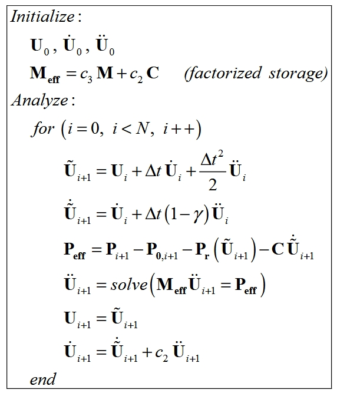
图 4.1 显式Newmark（ENM）方法。
可以证明，\(\gamma = 0 . 5\)的显式Newmark方法产生与众所周知的中心差分方法相同的解。然而，尽管这两种方法在数值上等效，但显式Newmark方法比中心差分方法具有几个重要优势。首先，它是一种自启动方法，意味着它不需要\(t = 0\)之前的任何响应量。其次，速度和加速度直接作为求解算法的一部分获得，不需要单独计算。最后也是最重要的，Shing和Mahin（1983）已经证明，显式Newmark方法比中心差分方法具有更有利的误差传播特性。
由于其数值等价性，显式 Newmark 方法继承了中心差分法的精度阶次和稳定性条件。两种方法都是二阶精度 \(p = 2\)。因此，它们满足要求 1。此外，显式 Newmark 方法是条件稳定的，其稳定性极限如下。
其中 \(\Delta t\) 是积分方法的步长，\(T _ { n }\) 是被分析结构的最短自振周期。由于显式 Newmark 方法是条件稳定的，它不能应用于具有奇异质量矩阵（会产生零周期模态）的结构问题。这违反了要求 3。从图 4.1 的伪代码可以看出，在每个时间步只需要一次预测位移处的抗力。这意味着每个积分步从结构的试验部分获取力不超过一次。因此，满足要求 2。显式 Newmark 方法的一个优点是求解算法中不需要结构的刚度。从方程 (4.22) 中的有效质量可以明显看出这一点，因此要求 4 不适用。由于最初假设 \(\gamma = 0 . 5\)，该积分方法无法引入任何数值阻尼来抑制高阶模态的参与，如要求 5 所建议。另一方面，对于 \(\gamma > 0 . 5\)，该算法引入了过多的数值阻尼，影响了低阶模态对解的参与。该方案也不再是二阶精度。最后，要求 6 和 7 在这里不适用，因为显式 Newmark 方法不是一个迭代求解方案。总之，除了缺乏算法阻尼外，只要能够以合理的时间步长满足条件稳定性极限，显式 Newmark 方法就是一种有吸引力的混合仿真积分方案。
4.4.2 显式广义-α方法 (EGα)
为了克服上述显式 Newmark 方法的问题，多年来已经发展了许多具有更合适形式的算法能量耗散的显式和隐式直接积分方法。在这些方法中，由 Hulbert 和 Chung (1996) 发展的广义-α 方案对于混合仿真最具吸引力。该方法提供了高频模态的优化耗散特性，算法阻尼的量可以通过分岔频率 \(\Omega _ { b } = \omega _ { b } \Delta t\) 处的谱半径 \(\rho _ { b }\) 来指定。为了引入所寻求的数值能量耗散，加权的运动方程 (4.25) 在两个时间步 \(t _ { i }\) 和 \(t _ { i + 1 }\) 之间公式化，取决于两个加权参数 \(\alpha _ { { _ m } }\) 和 \(\alpha _ { f }\) 的选择。此外，为了获得广义-α 方法的显式形式，Newmark 对位移和速度的有限差分公式 (4.13) 以预测-校正形式写出如下。
在上述平衡方程组 (4.25) 中，时间步之间的加速度和速度由以下加权方程表示。
另一方面，内部抗力和外加力可以通过任何广义求积法则 (Erlicher et al. 2002) 来表示。
例如，对于广义梯形法则，方程具有以下形式。
如果改用广义中点法则，则使用以下方程。
应当注意，预测位移，而不是新时间步的位移，被用于评估由上述广义梯形和中点公式提供的加权抗力。将位移和速度表达式代入 (4.25) 得到以下线性方程组，需要求解该方程组以获得新时间步 \(t _ { i } + \Delta t\) 处的加速度 \(\ddot { \mathbf { U } } _ { i + 1 }\)。
有效质量矩阵是质量矩阵和阻尼矩阵与常数 \(c _ { 1 } = \Delta t ^ { 2 } \beta\) , \(c _ { 2 } = \Delta t \gamma\) , \(c _ { 3 } = 1\) 以及加权参数 \(\alpha _ { { _ m } }\) 和 \(\alpha _ { f }\) 的组合。有效力向量（或不平衡力向量）也成为当前响应量和预测响应量之间的加权表达。
如果有效质量矩阵是对角矩阵，则线性方程组简化为 n 个解耦方程，可以很容易地求解新的加速度，并显著降低计算成本。与显式 Newmark 方法一样，如果建模时使用集中质量，并且不存在阻尼或仅存在质量比例粘性阻尼，则有效质量矩阵变为对角矩阵。一旦方程 (4.29) 解出 \(t _ { i } + \Delta t\) 处的加速度，其余响应量如位移和速度就被更新。
对整个 N 个时间步重复此过程即可得到所求解。因此，显式广义-α 积分方法可以总结为如图 4.2 所示的伪代码。
为了最大化高频算法能量耗散同时保持二阶精度，Hulbert 和 Chung (1996) 推导了算法参数 \(\beta\) 和 \(\gamma\)、加权参数 \(\alpha _ { m }\) 和 \(\alpha _ { f }\) 以及分岔频率 \(\Omega _ { b } = \omega _ { b } \Delta t\) 处的谱半径 \(0 \leq \rho _ { b } \leq 1\) 之间的以下关系。
从上述方程可以看出，得到的算法是一个属于广义-α 方法族的双参数 \(\left( \rho _ { b } , \alpha _ { f } \right)\) 方案。如果自由加权参数 \(\alpha _ { f } = 0\)，则得到的算法显式处理物理阻尼。相反，对于 \(\alpha _ { f } \neq 0\)，则获得物理阻尼的隐式处理。Hulbert 和 Chung (1996) 建议使用物理阻尼的中点评估，\(\alpha _ { f } = 0 . 5\)，因为该方法在此邻域内具有更大的稳定性极限。高频模态的算法能量耗散随着谱半径 \(\rho _ { b }\) 从 1.0 减小到 0.0 而增加。
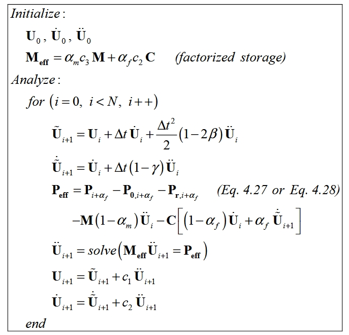
图 4.2 显式广义-α (EGα) 方法。
然而，重要的是要认识到，在隐式处理物理阻尼且谱半径接近 1.0 时，数值阻尼可能变为负值；从而向高频模态引入能量而不是耗散能量。这意味着在 \(\alpha _ { f } \neq 0\) 的情况下，最大谱半径 \(\rho _ { b }\) 需要作为所存在物理阻尼的函数进行限制。
根据 (4.32) 选择积分方案的参数后，两种方法都是二阶精度 \(p = 2\)。因此，它们满足要求 1。对于无
物理阻尼的情况，显式广义-α 方法是条件稳定的，其稳定性极限如下。
另一方面，如果存在物理阻尼，算法的稳定性极限比无阻尼情况更严格。对于显式处理物理阻尼的情况，稳定性极限如下。
在上述两个公式中，\(\Delta t\) 是积分方法的步长，\(T _ { n }\) 是被分析结构的最短自振周期。由于显式广义-α 方法在所有情况下都是条件稳定的，它不能应用于具有奇异质量矩阵（会产生零周期模态）的结构问题。这违反了要求 3。从图 4.2 的伪代码可以看出，组装有效力向量所需的抗力在每个时间步只需要一次。根据所采用的广义求积法则，抗力要么在预测位移处获取，要么在当前位移和预测位移之间的加权位移处获取。简而言之，这意味着每个积分步从结构的试验部分获取力不超过一次。因此满足要求 2。与显式 Newmark 方法一样，显式广义-α 方法的求解算法中不需要结构的刚度。从 (4.30) 中有效质量的方程可以明显看出这一点，因此要求 4 不适用。由于该方法的性质，满足要求 5。具体来说，直接积分方案提供了高频模态的最优耗散，而算法阻尼的量可以通过谱半径 \(\rho _ { b }\) 来指定。此外，数值能量耗散仅轻微降低了方法的精度，使得该方案保持二阶精度。最后，要求 6 和 7 在这里不适用，因为显式广义-α 方法不是一个迭代求解方案。总之，只要能够以合理的时间步长满足条件稳定性极限，显式广义-α 方法就是一种非常有吸引力的混合仿真积分方案。
与显式 Newmark 方法相比，它具有提供可调节的高频模态数值能量耗散的重要优势。
4.4.3 隐式 Newmark 方法 (INM1, INM2)
如前所述，Newmark (1959) 发展的直接积分方法是纯解析结构动力学问题中使用最广泛的方法。然而，为了将隐式 Newmark 方法应用于混合仿真问题，该方案必须进行调整，以便与混合模型的物理部分进行适当的交互。在推导出纯解析非线性问题的算法之后，讨论了该算法的几种可能的修改以及由此产生的适用于混合仿真的隐式积分方法。
隐式 Newmark 直接积分方法由时间离散的运动方程 (4.10) 和 Newmark 对位移和速度的有限差分公式 (4.13) 定义，为方便起见在此重复。
为了确定三个未知的响应量，例如位移、速度和加速度，可以通过两种不同的方法求解 (4.35) 中的三个方程。
D-形式:
第一种方法，也称为 D-形式，通过求解位移增量来推进时间解。为了推导这种形式，首先重新表述 Newmark 的有限差分公式 (4.35)，以获得 \(t _ { i + 1 }\) 处的速度和加速度表达式。
将这些速度和加速度代入平衡方程 (4.35)，并使这些方程等于零，得到一个非线性方程组，其中未知量是新时间步 \(t _ { i } + \Delta t\) 处的位移。
为了求解这个关于未知位移的非线性方程组，采用了著名的迭代 Newton-Raphson 算法。
左侧的向量函数 \(D F\) 的 Jacobian 矩阵和右侧的负向量函数 \(F\) 都在当前迭代的位移处求值，它们分别等价于有效刚度矩阵和有效力向量（也称为不平衡力向量）。
在上述线性方程组中，依赖于迭代 k 的有效刚度矩阵和有效力向量具有以下形式。
其中 \(c _ { \scriptscriptstyle 1 } = 1\) , \(c _ { 2 } = \gamma / ( \Delta t \beta )\) , 和 \(c _ { 3 } = 1 / ( \Delta t ^ { 2 } \beta )\) 。由于 Newton-Raphson 算法仅在位移向量的初始近似足够接近实际解时才保证收敛，因此时间 \(t _ { i }\) 处的收敛位移向量被用作时间 \(t _ { i } + \Delta t\) 处所求位移向量的初始近似。
一旦方程 (4.39) 解出迭代 k 处的位移增量，响应量如位移、速度和加速度就会被更新。
重复迭代直到满足适当的收敛准则。
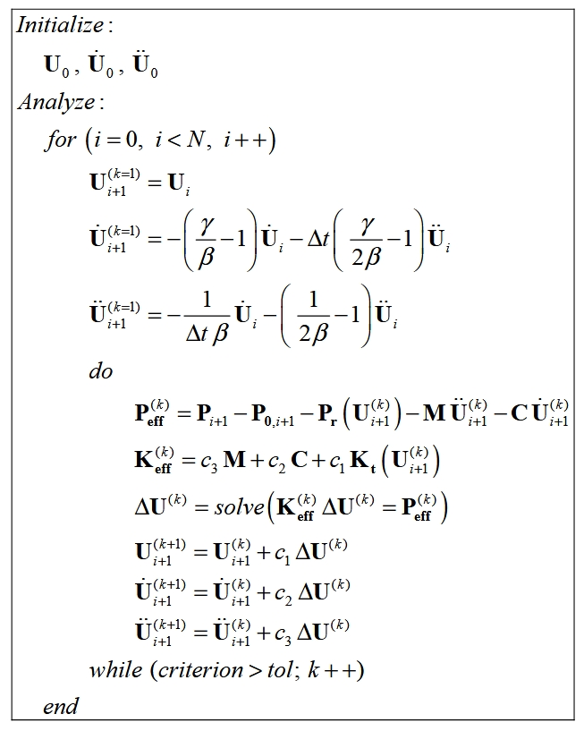
图 4.3 D-形式的隐式 Newmark 方法。
最后，对整个 N 个时间步重复此过程，每个时间步内进行 Newton-Raphson 迭代，即可得到所求解。隐式 Newmark 方法的 D-形式总结为图 4.3 中的伪代码。从伪代码可以看出，在每个迭代步结束时，通过将收敛准则与用户指定的容差进行比较来测试收敛性。
接下来解释一些可用于衡量收敛的可能准则。一种可能的选择是使用位移增量向量范数的绝对值。向量范数可以是任何 p-范数，甚至是最大范数（如果位移增量的最大分量最重要）。另一种可能性是利用相对收敛准则，例如当前位移增量的向量范数相对于第一次位移增量的向量范数，或者当前位移增量的向量范数相对于自上次收敛以来所有范数之和的比值。除了位移增量，也可以使用有效/不平衡力向量或能量度量来制定收敛准则，并且与位移增量一样，这些准则可以用绝对或相对的方式表示。
表 4.1 收敛准则。
absolute |
relative |
relative total |
|
|---|---|---|---|
displacement increment |
\(\left| \left| \Delta \mathbf{U}^{(k)} \right| \right|_p \leq tol\) |
\(\frac{\left| \left| \Delta \mathbf{U}^{(k)} \right| \right|_p}{\left| \left| \Delta \mathbf{U}^{(1)} \right| \right|_p} \leq tol\) |
\(\frac{\left| \left| \Delta \mathbf{U}^{(k)} \right| \right|_p}{\sum_{j=1}^k \left| \left| \Delta \mathbf{U}^{(j)} \right| \right|_p} \leq tol\) |
effective/unbalanced force |
\(\left| \left| \mathbf{P}_{\text{eff}}^{(k)} \right| \right|_p \leq tol\) |
\(\frac{\left| \left| \mathbf{P}_{\text{eff}}^{(k)} \right| \right|_p}{\left| \left| \mathbf{P}_{\text{eff}}^{(1)} \right| \right|_p} \leq tol\) |
- |
energy |
\(\frac{1}{2} \left( \Delta \mathbf{U}^{(k)} \right)^T \mathbf{P}_{\text{eff}}^{(k)} \leq tol\) |
\(\frac{\left( \Delta \mathbf{U}^{(k)} \right)^T \mathbf{P}_{\text{eff}}^{(k)}}{\left( \Delta \mathbf{U}^{(1)} \right)^T \mathbf{P}_{\text{eff}}^{(1)}} \leq tol\) |
- |
A-形式:
A-形式求解方法是一种预测-多校正方法，稍后将看到。在这种形式中，直接积分方案通过求解加速度增量而不是位移增量来推进时间解。为了推导 A-形式，将 Newmark 的位移和速度有限差分公式 (4.35) 直接代入平衡方程 (4.35)。使所有项等于零得到一个非线性方程组，其中未知量现在不是新时间步 \(t _ { i } + \Delta t\) 处的位移，而是加速度。
再次采用著名的迭代 Newton-Raphson 算法来求解这个关于未知加速度的非线性方程组。
左侧的向量函数 \(D F\) 的 Jacobian 矩阵和右侧的负向量函数 \(F\) 都在当前迭代的加速度处求值，它们分别等价于有效质量矩阵和有效力向量。
在上述线性方程组中，依赖于迭代 \(\mathbf { k }\) 的有效质量矩阵和有效力向量具有以下形式。
其中 \(c _ { 1 } = \Delta t ^ { 2 } \beta\) , \(c _ { 2 } = \Delta t\) γ 和 \(c _ { 3 } = 1\) 。由于 Newton-Raphson 算法仅在加速度向量的初始近似足够接近实际解时才保证收敛，因此时间 \(t _ { i }\) 处的收敛加速度向量被用作时间 \(t _ { i } + \Delta t\) 处所求加速度向量的初始近似。
从方程 (4.47) 的结构可以清楚地看出为什么 A-形式是一种预测-多校正方法。在每个时间步的第一次迭代中，生成位移和速度预测，然后随后进行校正直到达到收敛。一旦方程 (4.45) 解出迭代 k 处的加速度增量，响应量如位移、速度和加速度就会按如下方式校正。
重复迭代直到满足适当的收敛准则。最后，对整个 N 个时间步重复此过程，每个时间步内进行 Newton-Raphson 迭代，即可得到所求解。隐式 Newmark 方法的 A-形式总结为图 4.4 中的伪代码。
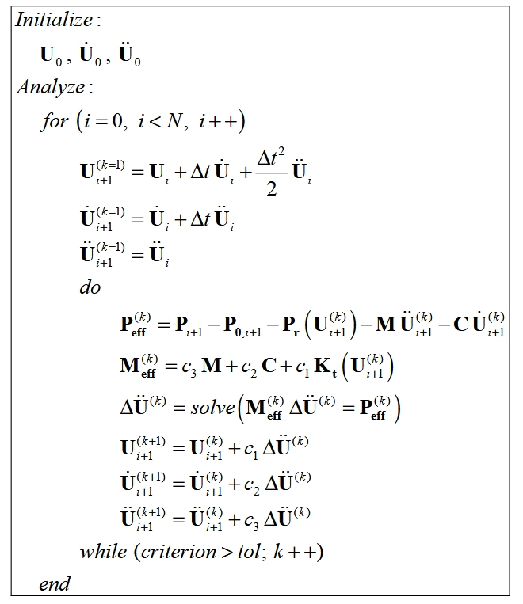
图 4.4 A-形式的隐式 Newmark 方法。
与求解方案的 D-形式类似，在每个迭代步结束时，通过将收敛准则与用户指定的容差进行比较来测试收敛性。然而，用于衡量收敛的可能准则与 D-形式实现中的有所不同。对于第一类准则（在增量解向量上测试收敛），使用加速度增量代替位移增量。第二类保持不变，即通过有效/不平衡力向量的绝对或相对大小来衡量收敛。最后一类不适用于 A-形式的求解方法，因为它不代表有意义的物理量（如能量）。
虽然隐式 Newmark 方法的 D-形式和 A-形式实现都是理论上合理的解，但经验表明，D-形式实现遇到的收敛问题比 A-形式实现少。对于具有强材料和几何非线性的复杂结构模型尤其如此。由于
这些可能的收敛问题以及接下来解释的其他原因，隐式 Newmark 方法的 D-形式实现更适合修改用于混合仿真。
在其当前形式下，所提出的隐式 Newmark 方法的两种求解方法都需要切线刚度矩阵，并且由于迭代过程中 Newton-Raphson 算法的二次收敛性，会产生非均匀、快速减小的位移增量。因此，为了获得合适形式的隐式 Newmark 积分方法，需要对求解方案进行若干修改。接下来解释其中一些可能的方法。
增量折减因子修正 (INM1):
由于很难从受控自由度上的测量中获得准确可靠的试验单元切线刚度矩阵，(4.40) 和 (4.46) 中 Jacobian 矩阵由试验单元的切线刚度矩阵 \(\mathbf { k } _ { \mathbf { t } , e l }\) 贡献的部分被初始刚度矩阵 \(\mathbf { k } _ { \mathbf { i } , e l }\) 替换。此外，为了对某些问题类型和结构模型获得更均匀的收敛，有时不仅对试验单元而且对解析单元都使用初始刚度矩阵是有利的。然而，将结构划分为使用切线单元刚度矩阵的分区和使用初始单元刚度矩阵的分区的混合处理通常能实现改进的收敛。这种方法类似于隐式-显式方法，其中结构被划分为隐式处理单元的分区和显式处理单元的分区。选择合适的收敛准则可以保证所有分区，也包括收敛较慢的初始刚度矩阵分区，达到满意的平衡。在第一种情况下，这导致了一个修正的 Newton-Raphson 算法，该算法使用恒定的初始刚度矩阵，因此 Jacobian 矩阵是恒定的，只需要分解一次。在第二种情况下，全局刚度矩阵是一个非常数的混合矩阵，由切线和初始刚度单元矩阵组装而成。因此，Jacobian 矩阵也是非常数的。虽然对于这两种情况，二次收敛都降低为线性收敛，但对于恒定的初始刚度矩阵迭代方法，这种降低显然更为明显。然而，单次矩阵分解的好处通常被达到平衡所需的过多迭代次数所抵消。
为了提高降低后的收敛阶，可以采用 Accelerated-Newton 方法来寻找平衡。Accelerated-Newton 算法在迭代期间保持刚度矩阵恒定，但使用先前迭代中的选定信息来加速收敛。Scott 和 Fenves (2003) 为非线性结构问题开发的 Krylov-Subspace Accelerated-Newton 算法就是这样的方法之一。这种 Krylov-Newton 方法已在 OpenSees 中实现，因此可以很容易地用于混合仿真。
然而，所描述的平衡解算法的修改还不能保证由这些迭代过程计算的位移增量在积分时间步内严格递增或严格递减，如混合仿真的要求 6 所规定。正如 Shing 和 Vannan (1991) 所建议的，可以引入一个折减因子 \(\theta\) 来修改响应增量，以增强收敛路径的光滑性并减少迭代过程中虚假加载/卸载循环的可能性。显然，这不幸地进一步降低了收敛阶。此外，Shing 和 Vannan (1991) 描述的响应折减因子只能纳入隐式 Newmark 方法的 D-形式。对于 A-形式，折减因子无法达到预期效果，因为预测量保持不变，因此初始位移增量没有被折减。
因此，第一种用于混合仿真的隐式 Newmark 方法是通过在迭代求解过程中使用修正的刚度矩阵（初始或混合）和增量折减因子，从算法的 D-形式获得的。用于混合仿真的隐式 Newmark 方法总结为图 4.5 中的伪代码。
该方法的精度和稳定性取决于两个算法参数 \(\beta\) 和 γ 。与显式对应方法一样，只有当 \(\gamma = 0 . 5\) 时算法才是二阶精度。对于 \(\gamma > 0 . 5\)，积分方案降为一阶精度。此外，它引入了过多的算法阻尼，影响了低阶模态对解的参与。隐式 Newmark 直接积分方法的稳定性极限由以下表达式定义。
其中 \(\Delta t\) 是积分方法的步长，\(T _ { n }\) 是被分析结构的最短自振周期。从 (4.49) 的分母可以看出，如果选择算法参数 \(\gamma = 0 . 5\)（为了
二阶精度）和 \(\beta \ge 0 . 2 5\)，积分方法变为无条件稳定。具有 \(\beta = 0 . 2 5\) 的隐式 Newmark 积分器也称为平均加速度法或梯形法。
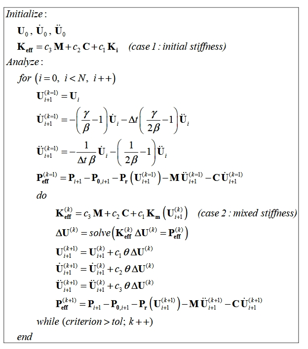
图 4.5 隐式 Newmark 方法的第一种修正 D-形式 (INM1)。
为了研究平衡解过程中收敛的进展，通过修正的隐式 Newmark 方法分析两个混合仿真模型。第一个模型是一个四层框架，其线弹性柱底部铰接。第一层和第二层的梁由非线性试验梁柱单元表示，第三层和第四层的梁由具有五个积分点的非线性力-梁柱单元建模。由于结构对称而荷载不对称，只对结构的左半部分进行建模分析。该模型只考虑材料非线性，意味着忽略由轴力引起的几何非线性。第二个模型是一个门式框架（类似于第 6 章中的框架），由两个非线性柱和一个线弹性梁连接而成。左柱由一个非线性试验梁柱单元表示，右柱由具有五个积分点的非线性力-梁柱单元建模。对应于节点质量的显著重力荷载施加在两个柱的顶部，并将由此产生的大 P-Δ 效应包含在两个柱单元的建模中。因此，在混合仿真过程中，门式框架柱的非线性几何和非线性材料行为都被考虑。通过应用初始刚度迭代、混合刚度迭代、无增量折减、增量折减、Newton-Raphson 迭代和 Krylov-Newton 迭代对两个模型进行了分析。当前位移增量的二范数相对于自上次收敛以来所有二范数之和的比值被用作所有分析的收敛准则。
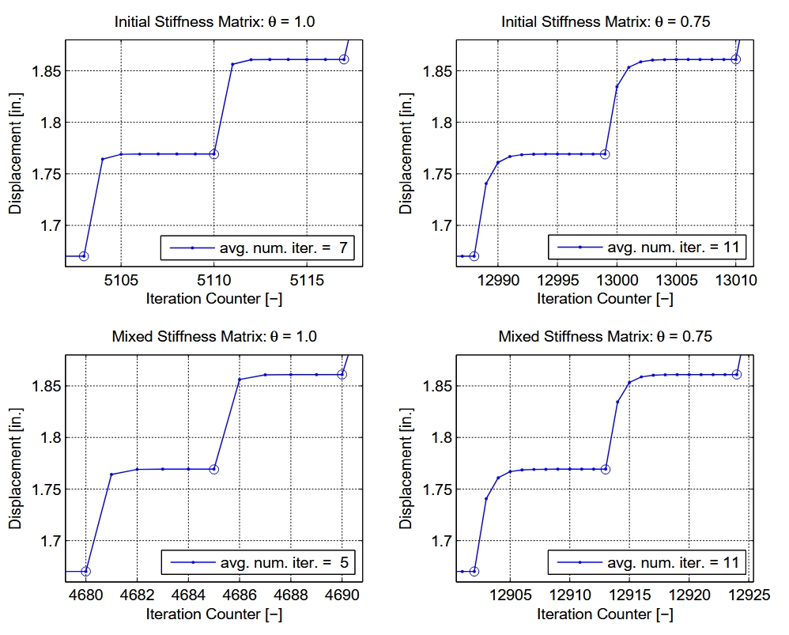
图 4.6 四层框架模型的 Newton-Raphson 收敛比较。
从四层框架模型（图 4.6）使用 Newton-Raphson 平衡解算法的图中可以看出，增量折减因子的应用成功地增强了收敛路径的光滑性，并减少了迭代过程中虚假加载/卸载循环的可能性。另一方面，对于这个特定模型，使用混合刚度矩阵与使用初始刚度矩阵相比对收敛路径的影响可以忽略不计。对于 Krylov-Newton 平衡解算法（图 4.7）也获得了类似的结果。然而，增量折减因子的效果较差，而使用混合刚度矩阵可以实现稍快的收敛。
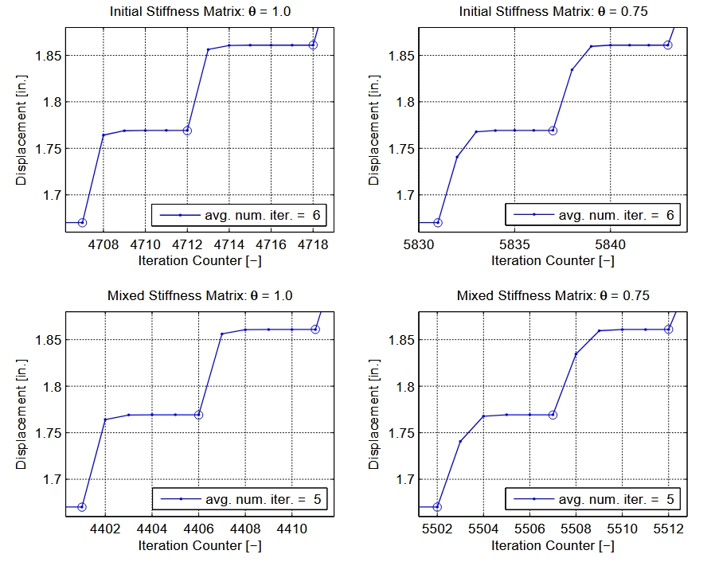
图 4.7 四层框架模型的 Krylov-Newton 收敛比较。
对于四层框架模型，最好的收敛路径是通过采用 Krylov-Newton 算法、混合刚度矩阵和适度的增量折减因子实现的。
具有强几何和材料非线性的门式框架模型表现出截然不同的收敛路径。对于使用初始刚度迭代的 Newton-Raphson 算法（图 4.8），位移增量在积分时间步内不是严格递增或严格递减的，因此在平衡迭代过程中引入了虚假的加载/卸载循环。即使是 \(50 \%\) 的增量折减因子也不能完全解决这种不良行为。
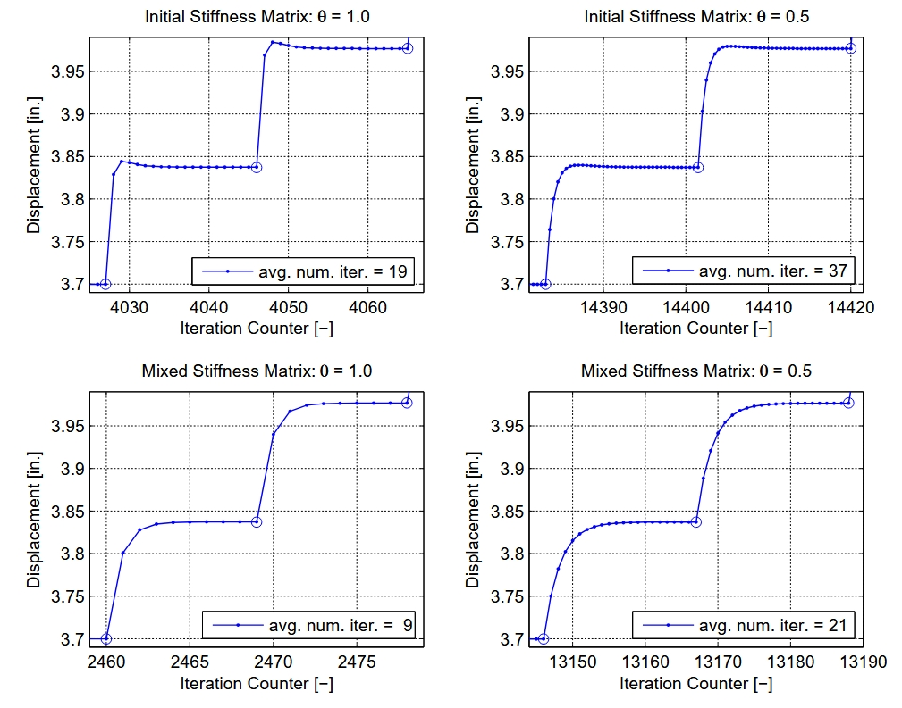
图 4.8 门式框架模型的 Newton-Raphson 收敛比较。
然而，通过在迭代过程中使用混合 Jacobian 矩阵而不是初始 Jacobian 矩阵，这个问题完全消失。结合混合刚度矩阵迭代的增量折减因子可以进一步改善收敛路径的光滑性。
如果使用 Krylov-Newton 而不是 Newton-Raphson 平衡解算法，可以观察到类似的行为。对于这个特定模型，Krylov-Newton 算法实现了显著的收敛加速，而受增量折减因子的影响不大。
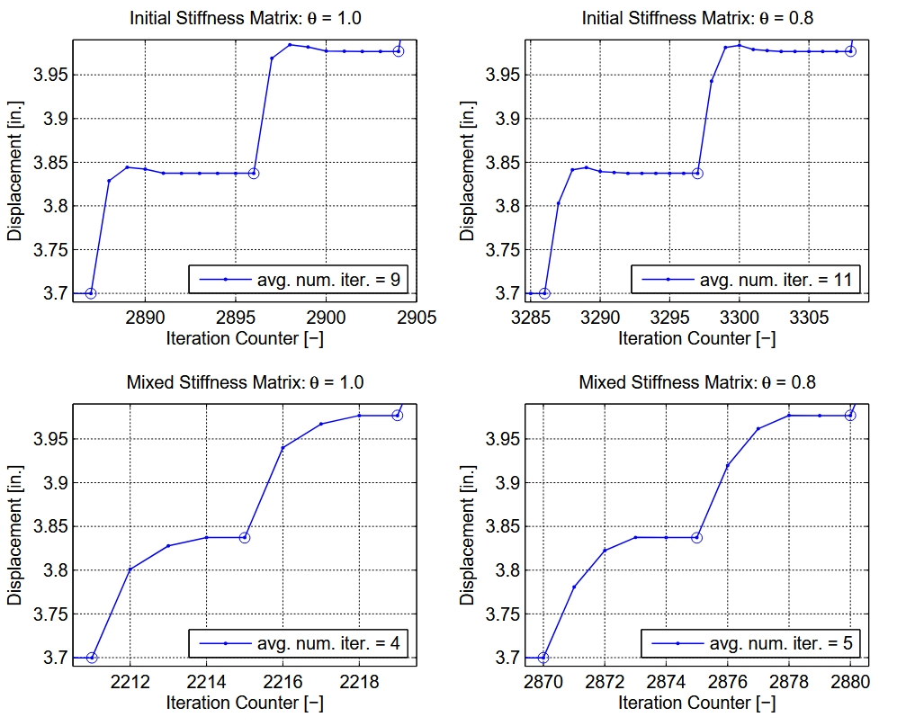
图 4.9 门式框架模型的 Krylov-Newton 收敛比较。
对于具有强几何和材料非线性的门式框架模型，最好的收敛路径是通过采用 Krylov-Newton 平衡解算法、混合刚度矩阵和无增量折减实现的。
鉴于混合仿真的特殊要求，可以就增量折减因子隐式 Newmark 直接积分方法得出以下结论。对于算法参数 \(\gamma = 0 . 5\) 和 \(\beta = 0 . 2 5\)，平均加速度法是二阶精度 \(p = 2\) 并且无条件稳定，与存在的物理阻尼量无关。这意味着要求 1 和 3 都得到满足。从
图 4.5 的伪代码可以看出，抗力需要的次数 k 等于通过满足所选收敛准则达到平衡所需的迭代次数。这意味着位移指令需要被传送到控制系统，力也需要由数据采集系统测量，每个积分时间步也是 k 次。因此，平衡解算法需要执行的迭代次数越少越好，因为要求 2 要求尽可能少的函数调用。
要求 4 得到满足，因为对于所描述的两种情况，全局初始刚度矩阵和全局混合刚度矩阵在组装时只需要恒定的、初始的试验单元刚度矩阵。由于最初假设 \(\gamma = 0 . 5\)，该积分方法无法引入任何数值阻尼来抑制高阶模态的参与，如要求 5 所建议。另一方面，对于 \(\gamma > 0 . 5\)，该算法引入了过多的数值阻尼，影响了低阶模态对解的参与。此外，该方案将不再是二阶精度。通过利用所描述的刚度矩阵和增量折减因子修正，可以保证由平衡解算法计算的位移增量在积分时间步内严格递增或严格递减。因此满足要求 6。
最后，要求 7（即迭代积分方法应产生尽可能均匀的位移增量）未被修正的隐式 Newmark 方案满足。从图 4.6-4.9 的收敛图中可以清楚地看到这一点。如果分配给控制系统施加这些不一致位移增量的时间间隔相同，则会在传递系统中产生速度振荡，从而产生力振荡。为了减少这些振荡，下一章描述的事件驱动算法需要在仿真过程中调整施加位移增量的时间间隔。因此，所描述的积分方法只有与专门的事件驱动策略结合时才能很好地工作。总之，除了缺乏算法阻尼外，修正的隐式 Newmark 方法只要与适当的事件驱动策略结合，就是一种有吸引力的混合仿真积分方案。建议将该方案用于具有强材料和几何非线性的刚硬或无限刚性问题，这些问题需要在迭代过程结束时达到良好收敛的平衡状态。
恒定迭代次数修正 (INM2):
因为先前描述的隐式 Newmark 方法的修正仍然产生非均匀的位移增量，并且因为这种形式的积分方法不能用于实时混合仿真，接下来讨论算法的另一种实现。目标是固定平衡迭代的次数为用户指定的常数值，并以使位移增量更均匀的方式修改迭代过程中的位移增量。固定子步或迭代次数的方 initial 由 Dorka 和 Heiland (1991) 以及 Shing 等人 (1991) 提出。Shing 的方法随后由 Zhong (2005) 改进。这里提出的直接积分方案是 Zhong 工作中使用的方案的略微修改版本。
与第一种修正的隐式 Newmark 方案一样，Jacobian 矩阵的公式和平衡解算法的应用保持不变。在第一种情况下，使用具有恒定初始刚度矩阵的修正 Newton-Raphson 算法，因此 Jacobian 矩阵是恒定的。在第二种情况下，全局刚度矩阵是一个非常数的混合矩阵，由切线和初始刚度单元矩阵组装而成，因此 Jacobian 矩阵也是非常数的。为了获得可以由用户指定的恒定迭代次数，引入了新的收敛测试。当某个量的范数低于用户指定的容差时，不是终止平衡解过程，而是在给定的恒定迭代次数后停止平衡解过程。仍然确定绝对能量范数（见表 4.1），但仅作为收敛误差大小的度量。此外，只使用计算出的响应增量的一部分来更新单元。缩减后的指令位移通过使用当前迭代步的试验位移和最后 n 个已提交位移的 Lagrange 插值来确定。Lagrange 插值的位置取决于当前迭代次数与固定总迭代次数的比值。用于生成缩放位移增量的多项式是一阶、二阶或三阶 Lagrange 多项式。
在上述插值公式中，\(\mathbf { U } _ { i + 1 } ^ { ( k - 1 ) }\) 是前一次迭代的试验位移，\(\mathbf { \Pi } _ { \mathbf { U } _ { j } }\) 是先前时间步的已提交位移和当前迭代的试验位移，\(L _ { n , j }\) 是 n 阶 Lagrange 函数，并且
\(x = k / k _ { \mathrm { m a x } } \in \left[ 0 , 1 \right]\) 是插值位置。方程 (4.50) 中所需的 Lagrange 函数总结在表 4.2 中。
表 4.2 最高 3 阶 Lagrange 函数。
\(L_{1,i+1} = x\) |
\(L_{2,i+1} = \frac{1}{2} x(x+1)\) |
\(L_{3,i+1} = \frac{1}{6} x(x+1)(x+2)\) |
|---|---|---|
\(L_{1,i} = -(x-1)\) |
\(L_{2,i} = -(x-1)(x+1)\) |
\(L_{3,i} = -\frac{1}{2} (x-1)(x+1)(x+2)\) |
- |
\(L_{2,i-1} = \frac{1}{2} (x-1)x\) |
\(L_{3,i-1} = \frac{1}{2} (x-1)x(x+2)\) |
- |
- |
\(L_{3,i-2} = -\frac{1}{6} (x-1)x(x+1)\) |
这个缩减方案类似于 Zhong (2005) 提出的方案，产生几乎均匀的位移增量，因此满足混合仿真的要求 7。
因为在每个迭代步结束时确定有效力向量，所以在迭代过程收敛后将一个额外的平衡解序列添加到积分方法中。但是，单元不再用响应量更新，因此试验单元不会将这些最后的响应增量传递给实验室中的控制系统。响应增量仅用于更新全局自由度上的响应，求解过程从这些自由度继续进入下一个积分时间步。
与没有额外平衡解序列的方法相比，这种方法实现了显著改进的积分方案收敛特性。用于混合仿真的第二种修正隐式 Newmark 方法总结为图 4.10 中的伪代码。与隐式 Newmark 方法的第一种修正形式一样，如果选择算法参数 \(\gamma = 0 . 5\)（为了二阶精度）和 \(\beta \ge 0 . 2 5\)，积分方案是无条件稳定的。
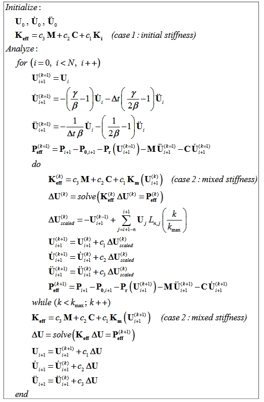
图 4.10 隐式 Newmark 方法的第二种修正 D-形式 (INM2)。
再次通过先前描述的两个混合仿真模型来研究平衡解过程中收敛的进展，这些模型通过恒定迭代次数的隐式 Newmark 方法进行分析。
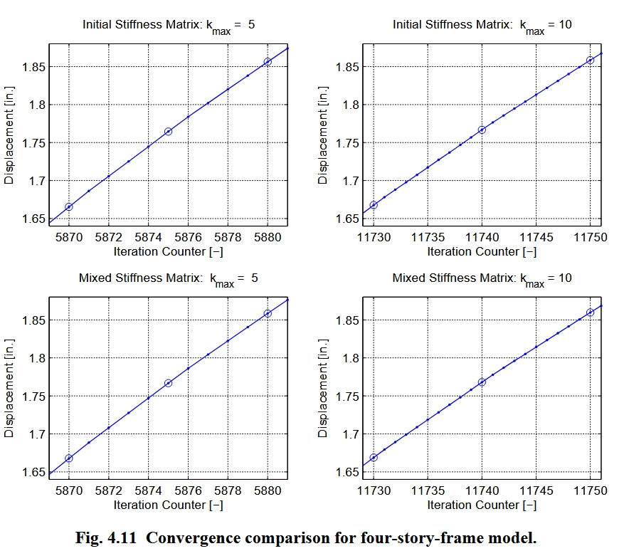
图 4.11 四层框架模型的收敛比较。
从四层框架模型的结果（图 4.11）可以看出，恒定迭代次数修正实现了非常光滑和均匀的收敛路径。这对于所有四种情况都是如此，包括初始刚度矩阵迭代、混合刚度矩阵迭代、恒定 5 次增量和恒定 10 次增量。然而，从四层框架模型的屋顶位移时程（图 4.12）也可以看出，与初始刚度矩阵迭代相比，混合刚度矩阵迭代提供了更精确的结构响应。
此外，精度随着恒定迭代次数的增加而提高。使用具有非常严格的位移增量收敛测试的未修改隐式 Newmark 方法获得的结构响应被用作假定精确解。对于最精确的解（混合刚度，\(\mathrm { k } _ { \operatorname* { m a x } } = 1 0\)），最大位移的误差为 \(0 . 0 5 \%\)，残余位移的误差为 \(0 . 2 \%\)。
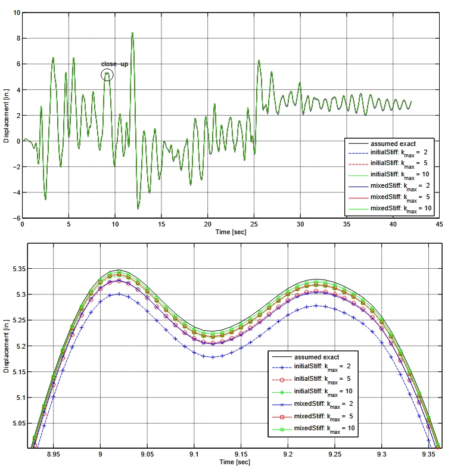
图 4.12 四层框架模型的位移比较。
对于具有强几何和材料非线性的门式框架模型，获得了类似的结果。收敛路径（图 4.13）都非常光滑，只是对于采用混合 Jacobian 迭代的情况，一致性略有下降。由于门式框架模型中存在强几何和材料非线性，对于四层框架模型观察到的趋势在这里更加明显。
从图 4.14 可以清楚地看出，混合 Jacobian 迭代实现了优越的精度，并且这种精度随着恒定迭代次数的增加而提高。对于最精确的
解（混合刚度，\(\mathrm { k } _ { \operatorname* { m a x } } = 1 0\)），最大位移的误差为 \(0 . 4 \%\)，残余位移的误差为 \(0 . 6 \%\)。
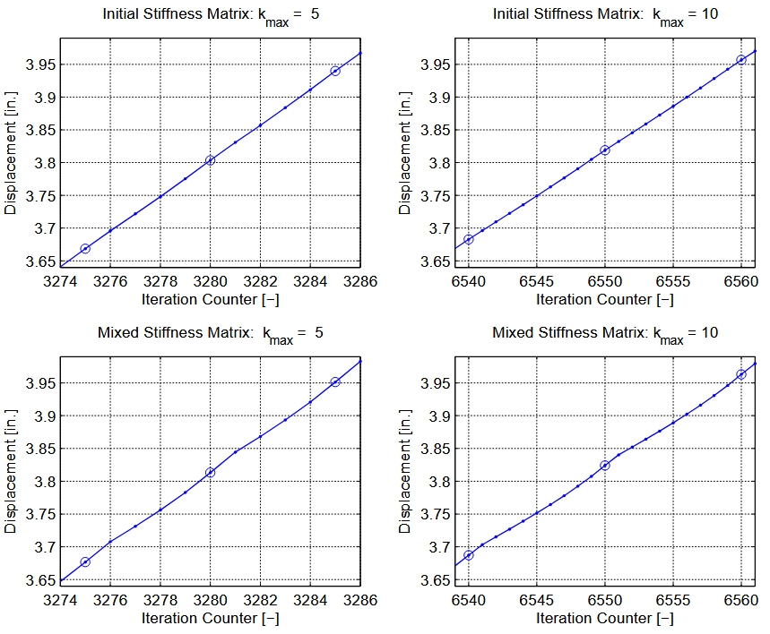
图 4.13 门式框架模型的收敛比较。
最后，再次根据混合仿真的特殊要求评估恒定增量次数的隐式 Newmark 方法。对于算法参数 \(\gamma = 0 . 5\) 和 \(\beta = 0 . 2 5\)，平均加速度法是二阶精度 \(p = 2\) 并且无条件稳定，与存在的物理阻尼量无关。这意味着要求 1 和 3 都得到满足。从图 4.10 的伪代码可以看出，抗力需要的次数为 \(\mathrm { k } _ { \mathrm { m a x } }\) 次，等于用户指定的恒定迭代次数。这意味着位移指令需要被传送到控制系统，力也需要由数据采集系统测量，每个积分时间步也是 \(\mathrm { k } _ { \mathrm { m a x } }\) 次。要求 4 得到满足，因为对于所描述的两种情况，全局初始刚度矩阵和全局混合刚度矩阵在组装时只需要恒定的、初始的试验
单元刚度矩阵。然而，如前所示，最好使用混合 Jacobian 矩阵。这样的矩阵在迭代过程中实现了更好的收敛，从而显著提高了结构响应的精度。
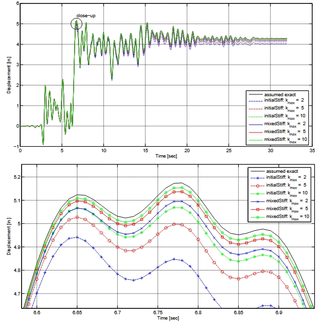
图 4.14 门式框架模型的位移比较。
由于最初假设 \(\gamma = 0 . 5\)，该积分方法无法引入任何数值阻尼来抑制高阶模态的参与，如要求 5 所建议。然而，可以通过将相同的修改应用于隐式广义-α 积分方法（接下来讨论）来获得所需的数值耗散。通过利用恒定数量的缩放位移增量，这些增量
在积分时间步内严格递增或严格递减。因此满足要求 6。最后，要求 7（即迭代积分方法应产生尽可能均匀的位移增量）也由于所描述的试验位移的 Lagrange 插值而得到满足。因此，只要结构的试验部分不表现出极端的组合材料和几何非线性，所描述的积分方法就能提供出色的结果。如果结构包含这样的试验部分，建议考虑前面提到的从试验测量中估计单元切线刚度矩阵的算法。
4.4.4 隐式广义-α方法 (IGa1, IGa2)
为了引入隐式 Newmark 方法所缺少的所需算法能量耗散，再次使用 Chung 和 Hulbert (1993) 发展的广义-α 方案。与积分方法的显式形式类似，隐式形式是二阶精度的，提供了高频模态的优化耗散特性，并且可以通过高频极限 \(\Omega _ { \infty } = \omega _ { \infty } \Delta t \infty\) 处的谱半径 \(\rho _ { \infty }\) 来指定算法阻尼的量。该算法在以下意义上是优化的：对于给定的高频耗散值 \(\rho _ { \scriptscriptstyle \infty } \in \left[ 0 , 1 \right]\)，它提供了最小化的低频耗散。与显式形式一样，加权的运动方程 (4.51) 在两个时间步 \(t _ { i }\) 和 \(t _ { i + 1 }\) 之间公式化，取决于两个加权参数 \(\alpha _ { { _ m } }\) 和 \(\alpha _ { f }\) 的选择。此外，再次使用 Newmark 的有限差分公式 (4.13），但保持其原始的、未修改的形式。
在上述平衡方程组中，时间步之间的加速度和速度由以下加权方程表示。
然而，内部抗力和外加力通过任何广义求积法则 (Erlicher et al. 2002) 来表示，如讨论相应显式方案的部分所述。例如，对于广义梯形法则，方程具有以下形式。
如果改用广义中点法则，则使用以下方程。
因为这里抗力是隐式处理的，所以使用新时间步的位移来评估由上述广义梯形和中点公式提供的加权力。
与隐式 Newmark 方法一样，可以采用相同的两种方法来求解 (4.51) 中的三个方程，以获得三个未知响应量。由于 D-形式实现再次遇到比 A-形式实现更少的收敛问题，这里只修改 D-形式方法用于混合仿真。对于隐式 Newmark 方法讨论的两种修改可以以相同的方式应用于隐式广义-α 方法。然而，这里只推导恒定迭代次数的修改。关于增量折减因子修改，请参考解释隐式 Newmark 方法的部分。
恒定迭代次数修正 (IGα2):
为了推导 D-形式，再次重新表述 Newmark 的有限差分公式 (4.51)，以获得 \(t _ { i + 1 }\) 处的速度和加速度表达式。
将这些速度和加速度代入加权平衡方程 (4.51)，并使这些方程等于零，得到一个非线性方程组，其中未知量是新时间步 \(t _ { i } + \Delta t\) 处的位移。
为了求解这个关于未知位移的非线性方程组，采用了著名的迭代 Newton-Raphson 算法。
左侧的向量函数 \(D F\) 的 Jacobian 矩阵和右侧的负向量函数 \(F\) 都在当前迭代的位移处求值，它们分别等价于有效刚度矩阵和有效力向量（也称为不平衡力向量）。
在上述线性方程组中，依赖于迭代 k 的有效刚度矩阵和有效力向量具有以下形式。
其中 \(c _ { \scriptscriptstyle 1 } = 1\) , \(c _ { 2 } = \gamma / ( \Delta t \beta )\) , 和 \(c _ { 3 } = 1 / ( \Delta t ^ { 2 } \beta )\) 。由于 Newton-Raphson 算法仅在位移向量的初始近似足够接近实际解时才保证收敛，因此时间 \(t _ { i }\) 处的收敛位移向量被用作时间 \(t _ { i } + \Delta t\) 处所求位移向量的初始近似。
一旦方程 (4.58) 解出迭代 k 处的位移增量，就使用一阶、二阶或三阶 Lagrange 多项式缩放这些增量。如前所述，Lagrange 插值的位置取决于当前迭代次数与固定总迭代次数的比值 (4.50)。然后，缩放后的位移增量用于更新响应量，如位移、速度和加速度，如下所示。
重复迭代直到达到用户指定的固定总迭代次数。与隐式 Newmark 方案一样，在每个迭代步结束时确定有效力向量，因此在迭代过程结束后将一个额外的平衡解序列添加到积分方法中。但是，单元不再用响应量更新，因此试验单元不会将这些最后的响应增量传递给实验室中的控制系统。
响应增量仅用于更新全局自由度上的响应，求解过程从这些自由度继续进入下一个积分时间步。对整个 N 个时间步重复此过程，每个时间步内进行 \(k _ { \mathrm { m a x } }\) 次迭代，即可得到所求解。隐式广义-α 方法的修正 D-形式总结为图 4.15 中的伪代码。
为了最大化高频算法能量耗散同时最小化低频耗散并保持二阶精度，Chung 和 Hulbert (1993) 推导了算法参数 \(\beta\) 和 γ、加权参数 \(\alpha _ { { _ m } }\) 和 \(\alpha _ { f }\) 以及高频谱半径 \(0 \leq \rho _ { \infty } \leq 1\) 之间的以下关系。
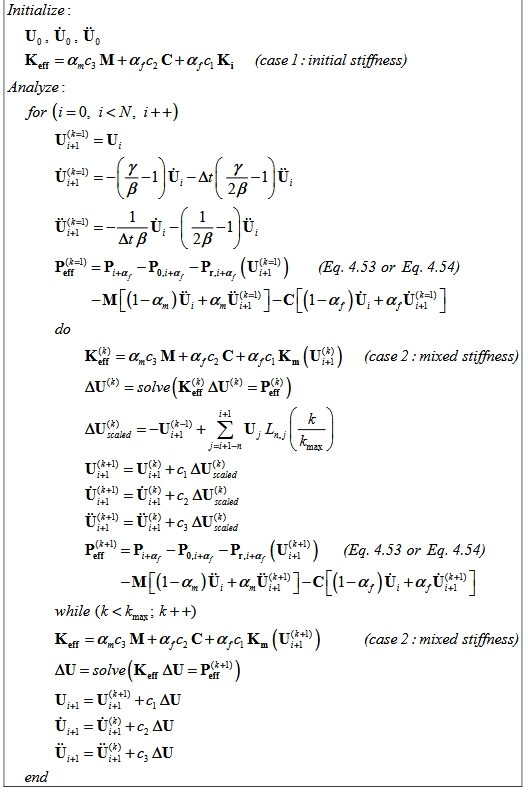
图 4.15 隐式广义-α 方法的第二种修正 D-形式 (IGα2)。
得到的隐式广义-α 直接积分方法是一个单参数 \(\left( \rho _ { \infty } \right)\) 方案，对于位移和速度是无条件稳定且二阶 \(p = 2\) 精度的，对于加速度是一阶精度的。此外，该方法满足与恒定迭代次数隐式 Newmark 方案相同的混合仿真特殊要求，其重要优势在于提供了优化的、用户可调的高频算法能量耗散。因此，与相应的隐式 Newmark 方法相比，恒定迭代次数的隐式广义-α 方法额外满足要求 5，因此应该是混合仿真中更优选的方案。
4.4.5 广义-α-OS 方法 (GaOS1)
广义-α-OS 直接积分方法类似于 Nakashima (1988) 最初发展的 alpha-OS 方案。该算法是 Hughes 等人 (1979) 提出的算子分裂技术与 Chung 和 Hulbert (1993) 发展的广义-α 方法的结合。因此，这里引入的这种替代方法与 Bonelli 和 Bursi (2004) 提出的不同。得到的积分方案是一种预测-单校正方法，不需要迭代平衡解算法，并且继承了广义-α 方法族的优化算法耗散特性。算子分裂技术用于近似结构响应与线性的偏差，这意味着非线性抗力被表示为相应的线弹性抗力与一个近似修正部分之间的差值。alpha-OS 积分方法类的优点在于，无需使用计算昂贵的迭代平衡解算法即可实现无条件稳定性。
算法的推导从与显式广义-α 方法相同的平衡和有限差分公式开始。
利用算子分裂技术，平衡方程 (4.63) 左侧的非线性内力近似如下。
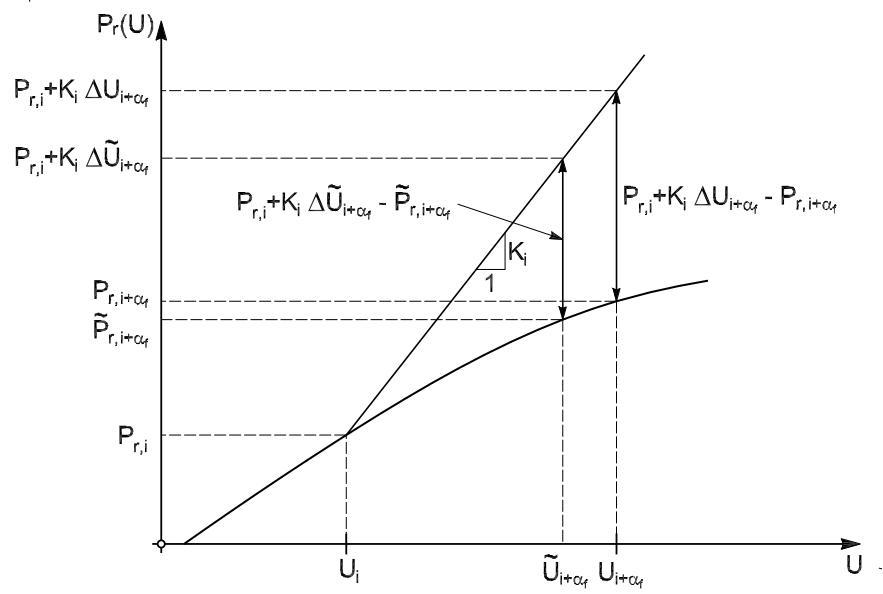
图 4.16 使用 Ki 近似非线性抗力。
从上图可以看出，算子分裂技术假设预测位移 \(\tilde { \mathbf { U } } _ { i + \alpha _ { f } }\) 处的弹性抗力与非线性抗力之差近似等于新位移 \(\mathbf { U } _ { i + \alpha _ { f } }\) 处的弹性抗力与非线性抗力之差。将 (4.64) 代入平衡方程 (4.63) 得到以下近似平衡方程。
在上式中，时间步之间的加速度、速度和位移由以下加权方程表示。
与前面讨论的积分方法类似，预测位移处的内抗力和外加力用任何
广义求积法则 (Erlicher et al. 2002) 表示。例如，对于广义梯形法则，方程具有以下形式。
如果改用广义中点法则，则使用以下方程。
接下来，用预测位移表示 \(t _ { i + 1 }\) 处的速度和加速度。
将速度和加速度表达式代入 (4.65) 得到以下线性方程组，需要求解该方程组以获得预测位移和新位移之间的位移增量 ΔU。
在上述线性方程组中，有效刚度矩阵和有效力向量具有以下形式。
其中 \(c _ { \scriptscriptstyle 1 } = 1\) , \(c _ { 2 } = \gamma / ( \Delta t \beta )\) , 和 \(c _ { 3 } = 1 / ( \Delta t ^ { 2 } \beta )\) 。一旦方程 (4.70) 解出位移增量，响应量如位移、速度和加速度就会按如下方式更新。
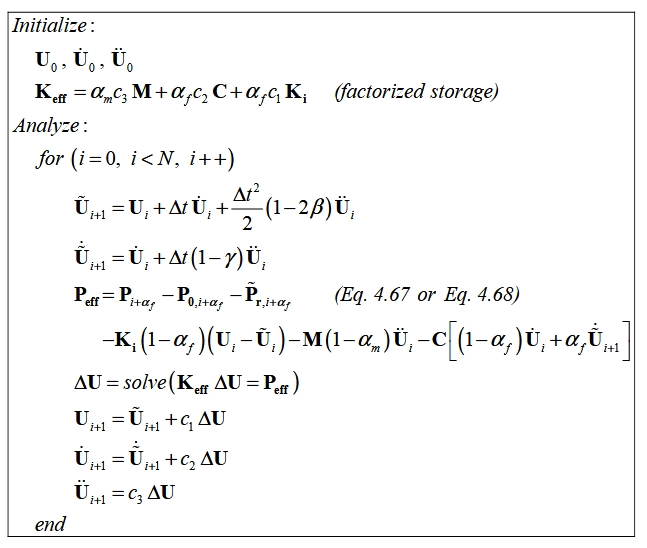
图 4.17 广义-α-OS (GαOS1) 方法。
对整个 N 个时间步重复此过程即可得到所求解。因此，广义-α-OS 积分方法可以总结为如上图 4.17 所示的伪代码。
根据方程 (4.62) 选择积分方案的参数后，该方法对于位移和速度是二阶精度 \(p = 2\)，对于加速度是一阶精度，因此满足要求 1。只要在任何时候预测刚度都大于切线刚度，广义-α-OS 方法就是无条件稳定的 (Combescure and Pegon 1997)，因此满足要求 3。这意味着 \(\delta \mathbf { K } = \mathbf { K _ { i } } - \mathbf { K _ { t } }\) 必须是半正定的。因此，广义-α-OS 方法不能用于分析表现出硬化材料行为或因几何非线性而刚化的结构。此外，如果通过大位移、中等变形、共旋转变换来考虑几何非线性，该方法也可能变成条件稳定的。这在本节末尾进一步解释。从图 4.17 的伪代码可以看出，组装有效力向量所需的抗力在每个时间步只需要一次。取决于
所采用的广义求积法则，抗力要么在预测位移处获取，要么在最后预测位移和当前预测位移之间的加权位移处获取。简而言之，这意味着每个积分步从结构的试验部分获取力不超过一次。因此满足要求 2。要求 4 得到满足，因为全局初始刚度矩阵在组装时只需要恒定的、初始的试验单元刚度矩阵。由于该方法的性质，满足要求 5。具体来说，广义-α-OS 积分方案提供了高频模态的最优耗散，而算法阻尼的量可以通过高频谱半径 \(\rho _ { \infty }\) 来指定。此外，数值能量耗散仅轻微降低了方法的精度，使得该方案保持二阶精度。最后，要求 6 和 7 在这里不适用，因为广义-α-OS 方法不是一个迭代求解方案。由于用于近似运动方程中抗力的近似，该算法不能为高度非线性的结构提供非常精确的结果。然而，只要所分析的结构没有表现出严重的几何非线性，广义-α-OS 方法就是一种非常有吸引力的混合仿真积分方案。
下面说明广义-α-OS 方法与共旋转变换结合时可能失去无条件稳定性的情况。为了评估 \(\delta \mathbf { K } = \mathbf { K _ { i } } - \mathbf { K _ { t } }\) 的半正定性，首先确定一个采用共旋转变换的简单弹性悬臂柱单元的初始和切线刚度矩阵。局部坐标系中框架单元的刚度矩阵推导如下。
其中基本坐标系中的协调矩阵 a 和弹性单元刚度矩阵 \(\mathbf { k _ { \mathbf { b } } }\) 由公式 (4.74) 给出。在这些公式中，\(\mathbf { u } _ { \mathrm { 1 } }\) 和 \(\mathbf { p } _ { 1 }\) 是局部坐标系中的单元位移和力，\({ \bf u _ { \mathrm { b } } }\) 和 \(\mathbf { q }\) 是基本坐标系中的单元变形和力，\(\alpha\) 是弦转角，\(L _ { n }\) 是变形后的弦长。
此外，(4.73) 中局部刚度矩阵的第一部分代表材料刚度，第二部分代表几何刚度。这两部分可以用任何计算机代数系统 (CAS) 如 Mathematica (Wolfram) 或 Maple (Maplesoft) 轻松求值。然而，得到的 6x6 刚度矩阵相当复杂，因此这里不展示。对于本例中使用的弹性悬臂柱（见图 4.18a），底部的三个固定自由度不进入运动方程，局部初始和切线刚度矩阵缩减为 3x3 矩阵。切线刚度矩阵仍然相当复杂，因此这里也不展示，但对于弦转角 \(\alpha = 0\) 和弦长 \(L _ { \mathfrak { n } } = L\)，得到以下初始刚度矩阵。
接下来通过确定其特征值来评估 \(\delta \mathbf { K }\) 的半正定性。为了获得最小特征值的闭式解，首先考虑无荷载的弹性共旋桁架的特殊情况（\(\begin{array} { r } { E I = q _ { 1 } = q _ { 2 } = q _ { 3 } = 0 } \end{array}\)）。最小特征值由以下表达式给出。
由于最小特征值为负，\(\delta \mathbf { K }\) 不再是半正定的。因此，广义-α-OS 方法变成了条件稳定。
如果在弹性悬臂柱顶端施加水平位移 \(u _ { l , 5 }\) 进行推覆分析，该柱在恒定的竖向力 \(P\) 作用下受压，可以得到类似的数值结果。从图 4.18b 可以看出，三个特征值之一为负，并随着侧移的增加而减小。这再次使得 δK 负定，并使广义-α-OS 方法变为条件稳定。图 4.18c 和 d 分别显示了悬臂柱顶端的局部力和轴力。因为从推覆分析开始最小特征值就变为负值，即使对于在初始弹性阶段后表现出软化材料行为的悬臂柱，广义-α-OS 方法也保持条件稳定。
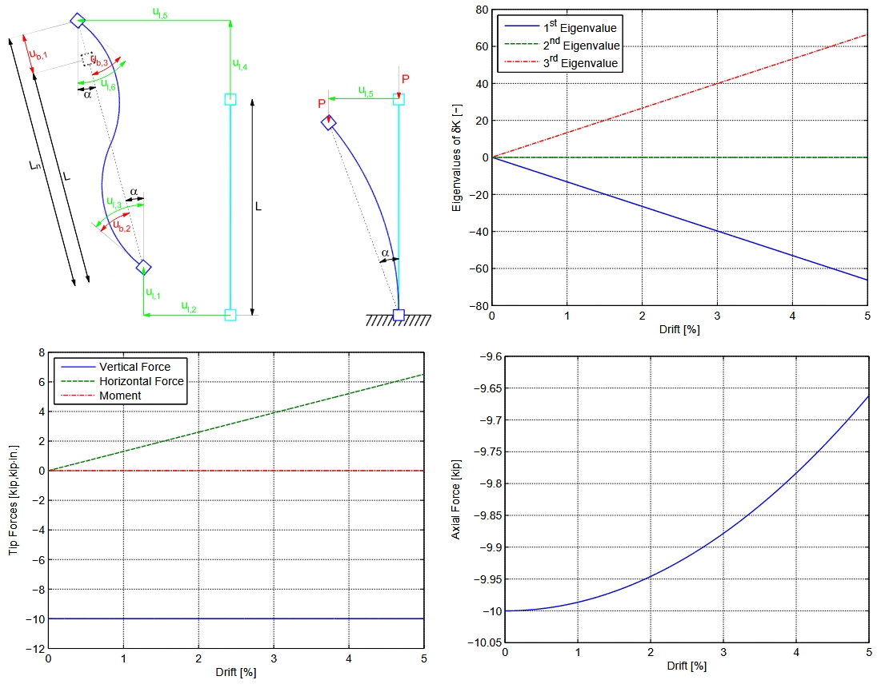
图 4.18 具有共旋转变换的弹性悬臂柱的推覆分析：(a) 几何形状，(b) 特征值，(c) 尖端力，(d) 轴力。
4.4.6 修正的广义-α-OS 方法 (GaOS2)
为了改进广义-α-OS 方法在分析考虑大位移几何非线性的结构模型时可能变成条件稳定的缺陷，建议使用混合刚度矩阵代替初始刚度矩阵来近似抗力。混合全局刚度矩阵由解析单元的切线刚度矩阵和试验单元的初始刚度矩阵（或可用的切线刚度矩阵）组装而成。使用混合全局刚度矩阵，平衡方程 (4.63) 左侧的内部抗力现在近似如下。
混合刚度矩阵在预测位移 \(\tilde { \mathbf { U } } _ { i + 1 }\) 或 \(\tilde { \mathbf { U } } _ { i + \alpha _ { f } }\) 处求值，具体取决于所采用的广义求积法则。这意味着 Jacobian 矩阵不再是常数，每个时间步需要求值一次，从而增加了算法的计算成本。
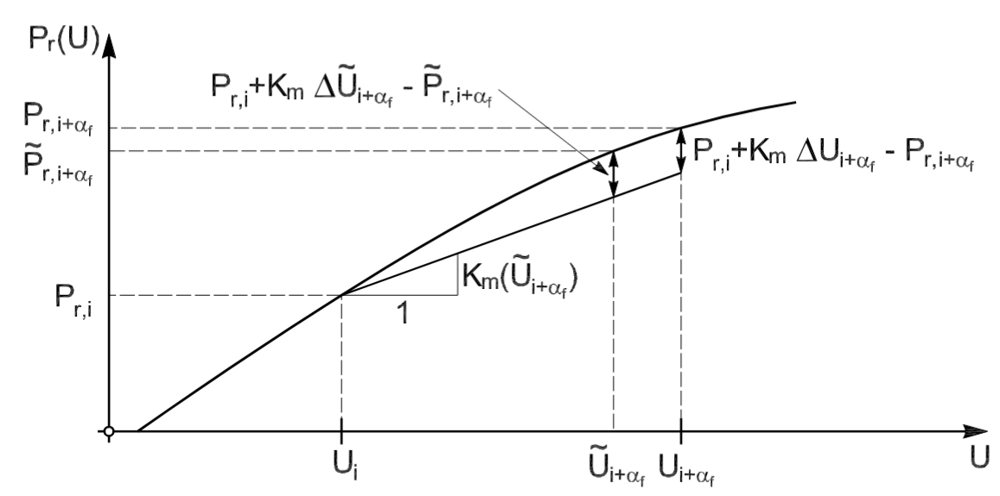
图 4.19 使用 \(\mathbf { K _ { m } }\) 近似非线性抗力。
将 (4.77) 代入平衡方程 (4.63) 得到以下近似平衡方程。
算法的其余部分与先前描述的保持不变，因此修正的广义-α-OS 积分方法可以总结为如下文图 4.20 所示的伪代码。
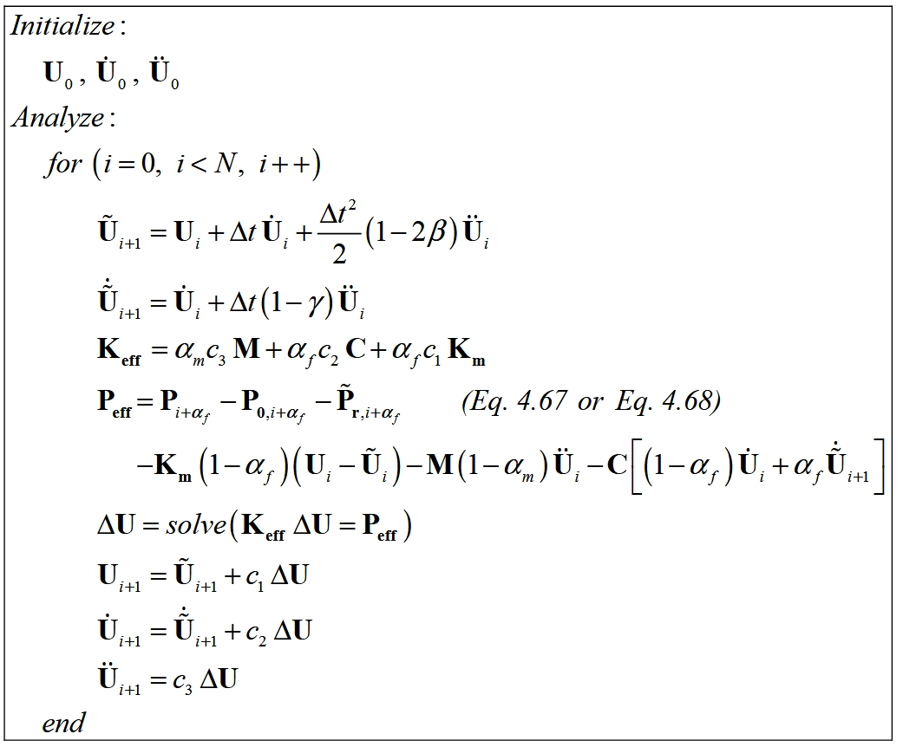
图 4.20 修正的广义-α-OS (GαOS2) 方法。
为了证明修正的广义-α-OS 方法改进的稳定性，使用大位移共旋转变换分析一个悬臂柱。从图 4.21a 可以看出，该模型由两个等长的力-梁柱单元组成。由于质量只分配给柱顶的两个平动自由度，模型的全局质量矩阵是奇异的，秩为 2。悬臂柱的基本周期为 1.321 秒，假设阻尼为临界阻尼的 \(5 \%\)。在将模型置于峰值加速度为 \(0 . 3 7 8 g\) 的 1978 年 Tabas 近断层地震动作用之前，悬臂柱在恒定的竖向重力荷载 \(P = 5 \mathrm { k i p }\) 作用下受压。使用积分时间步长 \(\Delta t _ { \mathrm { i n t } } = 0 . 0 1 \mathrm { s e c }\) 分析结构，该步长等于地面加速度记录的时间增量。
从图 4.21b 和图 4.22b 可以看出，通过广义-α-OS 方法分析的悬臂柱的位移响应在模拟开始后约 6.5 秒开始无界增长。因此，它变得不稳定。另一方面，通过修正的广义-α-OS 方法分析的悬臂柱的位移响应在整个地震动分析期间保持有界且准确。这是由于
算法稳定性的改善，这是通过使用混合全局刚度矩阵实现的。通过比较图 4.21 和图 4.22，还可以观察到，对于具有线弹性材料行为的悬臂柱和具有非线性材料行为的悬臂柱，都获得了相同的一般行为。
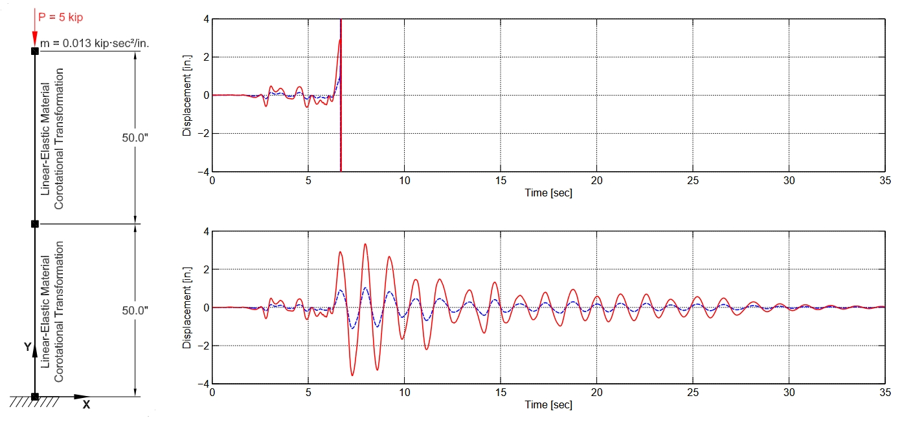
图 4.21 线弹性材料行为和非线性共旋转变换下悬臂柱的响应：(a) 模型，(b) GαOS1，(c) GαOS2。
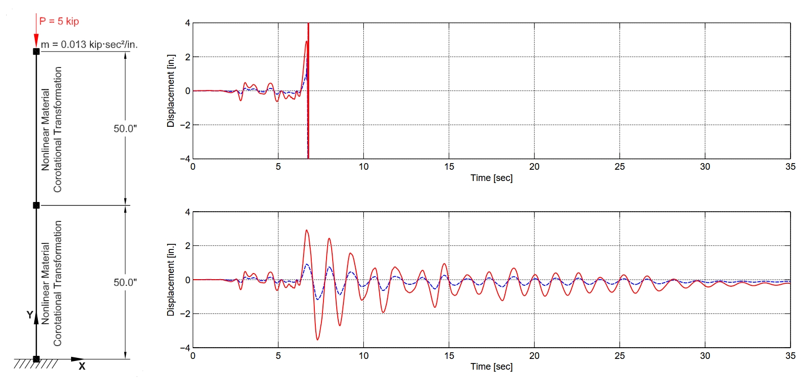
图 4.22 非线性材料行为和非线性共旋转变换下悬臂柱的响应：(a) 模型，(b) GαOS1，(c) GαOS2。
4.4.7 精度：数值耗散和色散
在结构动力学中，使用不同于局部截断误差的精度度量通常更有用。首选以数值耗散和色散为单位的精度度量。根据 Hughes (2000)，对于自由振动中的线弹性阻尼单自由度系统，数值方法的离散解可以写成类似于精确解的形式。
其中 \(\overline { { \omega } } _ { D } = \overline { { \omega } } _ { n } \sqrt { 1 - \xi ^ { 2 } }\)。在上述公式中，\(\bar { \xi }\) 和 \(\overline { { \omega } } _ { n }\) 分别是精确解的阻尼比和圆频率的算法对应量。\(\bar { \xi }\) 称为算法或数值阻尼比（耗散的量度），\(( \overline { { T } } - T ) / T\) 称为相对周期误差（色散的量度）。由于对于大多数数值方案很难获得这些精度度量的解析表达式，因此改为从仿真结果中获得。因此，对所有直接积分方法执行线弹性单自由度系统的自由振动测试，以确定它们的数值耗散和色散特性。SDOF 系统的周期为 \(T = 1 \mathrm { s e c }\)，由初始位移 \(\mathbf { U _ { 0 } } = 1\) 英寸和初始速度 \(\dot { \mathbf { U } } _ { \mathbf { 0 } } = 0\) 英寸/秒激励。
图 4.23-4.26 给出了一个特定的归一化积分时间步长 \(\Delta t / T = 0 . 1\) 的自由振动解的位移响应。本系列的第一张图比较了所讨论的直接积分方法的位移。可以看出，显式 Newmark 方法和显式广义-α 方法缩短了周期，而所有隐式方法（包括算子分裂方法）都延长了周期。此外，可以观察到广义-α 方法如何通过指定谱半径 \(\rho\) 来提供引入用户可调的算法能量耗散的手段。
图 4.24 显示了显式广义-α 方法在一组分岔频率谱半径 \(\rho _ { b }\) 范围内产生的自由振动解。对于 \(\rho _ { b } ^ { \phantom { } } = 1 . 0\)，不引入算法阻尼，解与显式 Newmark 方法获得的解相同。另一方面，对于 \(\rho _ { b } = 0 . 0\)，积分方案实现了渐近湮灭，提供了最大的算法阻尼。这意味着根据所选的积分时间步长，任何高频响应几乎都在一个时间步内被湮灭。
当分析通过罚函数法施加约束的结构时，显式广义-α 方法的高频耗散非常有用。
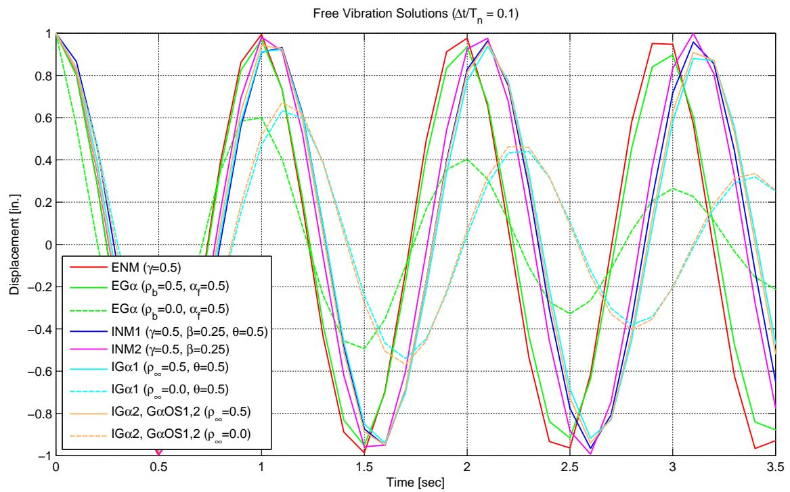
图 4.23 直接积分方法的自由振动解。
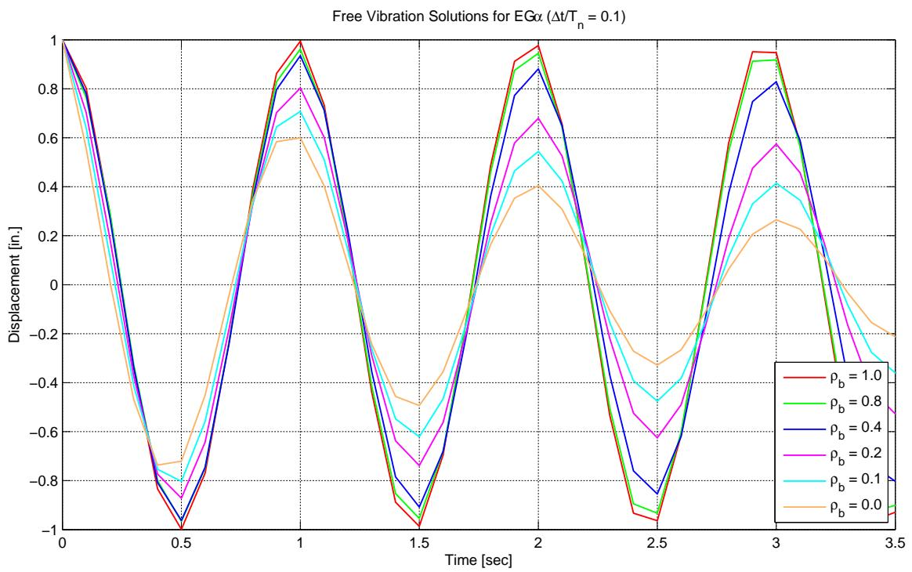
图 4.24 显式广义-α (EGα) 方法的自由振动解。
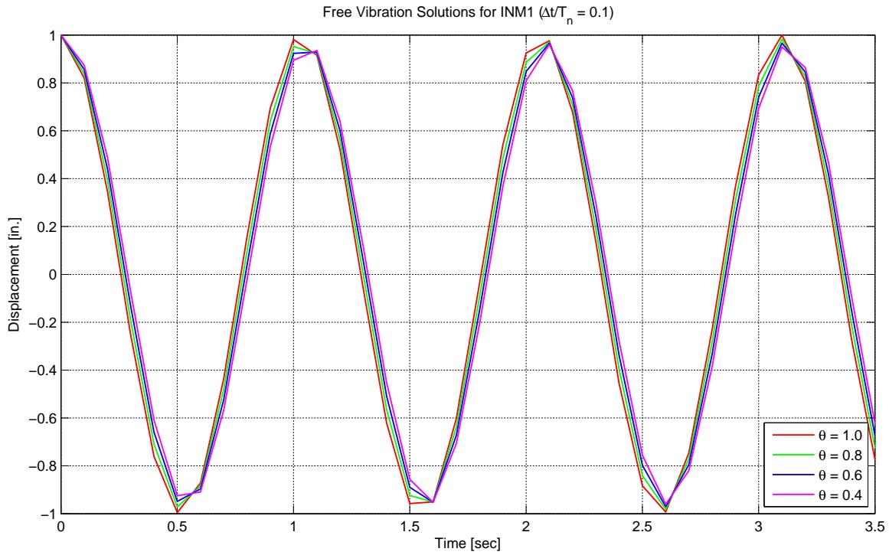
图 4.25 隐式 Newmark (INM1) 方法的自由振动解。
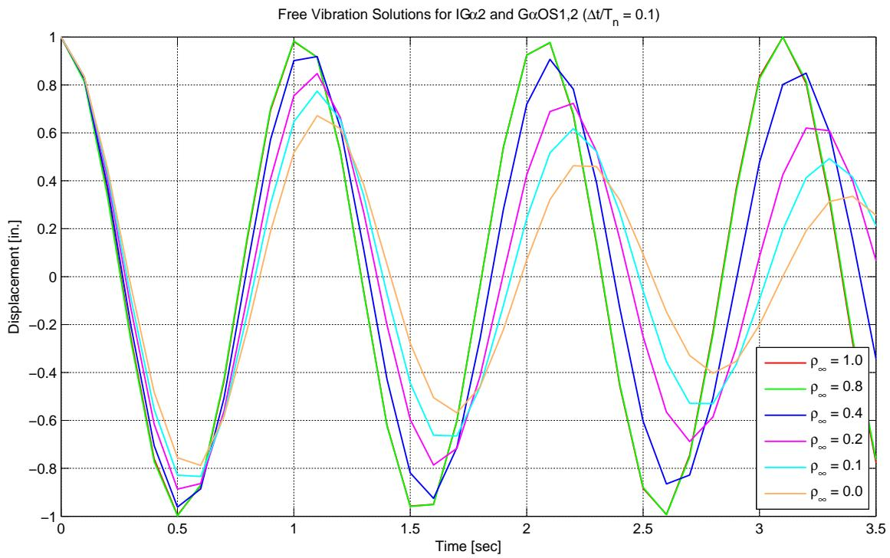
图 4.26 隐式广义-α (IGα2) 方法的自由振动解。
对于不同增量折减因子 \(\theta\) 的修正隐式 Newmark 方法的位移响应如图 4.25 所示。可以看出，随着增量折减因子的减小，自由振动解会损失一些精度。
本系列的最后一张图 4.26 显示了恒定迭代次数的隐式广义-α 方法和广义-α-OS 方法的位移响应，对于线弹性系统，这些方法是相同的。与显式方法类似，当 \(\rho _ { \infty } = 1 . 0\) 时不引入算法阻尼，两种积分方案产生的解与隐式 Newmark 方法等效。对于 \(\rho _ { \infty } = 0 . 0\)，算法再次达到渐近湮灭，从而在高频模式中引入最大算法阻尼，同时最小化低频模式中的能量耗散。与显式广义-α 方法一样，当通过罚函数法施加约束时，这两种积分方案也非常适用。
接下来的三张图比较了所有讨论的直接积分方法的两个精度度量，即算法阻尼比和相对周期误差。图 4.27 提供了不同方案之间的比较。
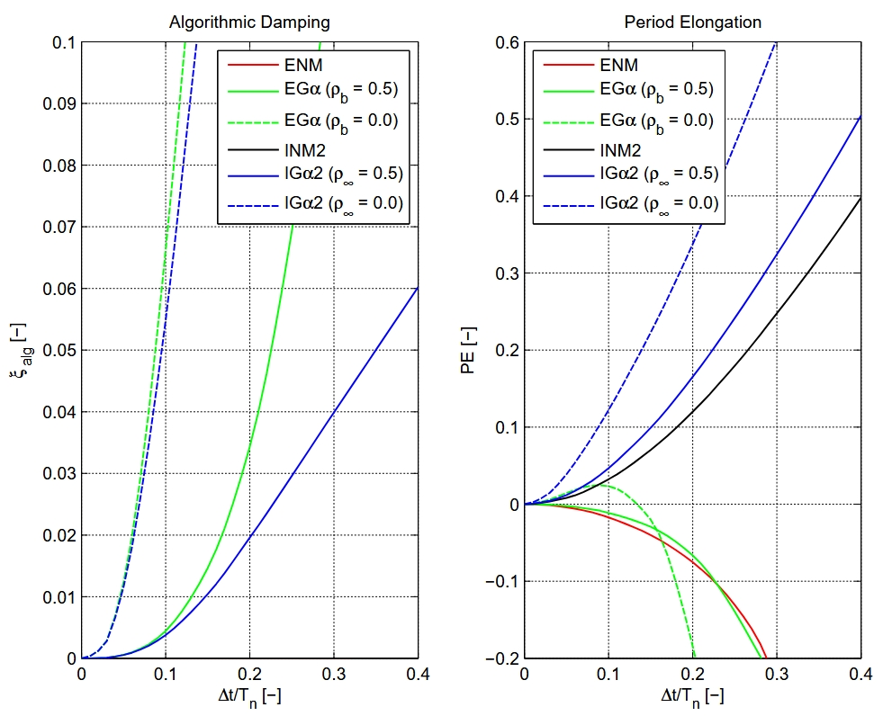
图 4.27 直接积分方法的算法阻尼比和相对周期误差。
可以看出，显式和隐式 Newmark 方法在所有模式下都提供零算法能量耗散。相比之下，广义-α 方法为谱半径 \(\rho < 1 . 0\) 提供了用户可调的算法阻尼量。此外，由于显式广义-α 方法是条件稳定的，当接近稳定性极限时，数值阻尼比增加得比隐式广义-α 和广义-α-OS 方案更快。从图 4.27 的第二张图可以看出，所有算法都表现出一些相对周期误差。显式 Newmark 方法和显式广义-α 方法通常会缩短周期，而隐式方法会延长周期。
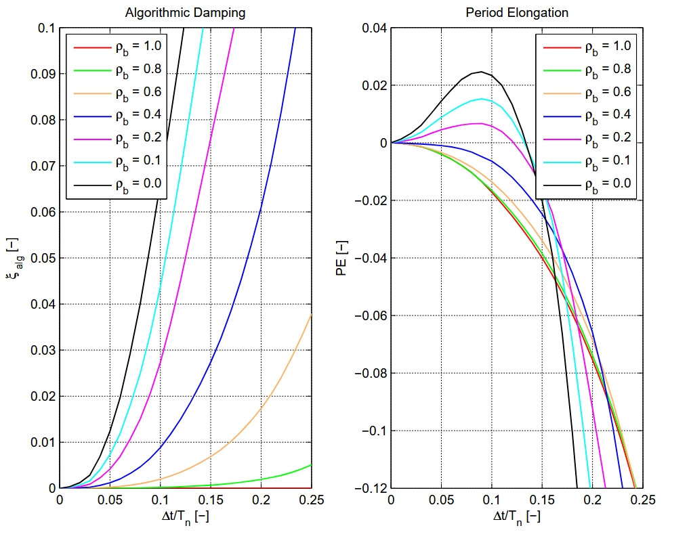
图 4.28 显式广义-α (EGα) 方法的算法阻尼比和相对周期误差。
上面的图 4.28 显示了显式广义-α 方法对于不同谱半径 \(\rho _ { b }\) 值的数值阻尼比和相对周期误差。当
\(\rho _ { b } ^ { \phantom { } } = 1 . 0\) 时，算法能量耗散从零开始增加到 \(\rho _ { b } = 0 . 0\) 时的最大值。从图 4.28 的第二部分可以看出，根据谱半径 \(\rho _ { b }\) 的不同，可能会发生周期缩短和延长。正如 Hulbert 和 Chung (1996) 所指出的，在谱半径约为 \(\rho _ { b } \cong 0 . 3 6 6 5\) 时，低频域的周期误差最小。
最后，对于隐式广义-α 和广义-α-OS 方法，图 4.29 显示了一系列谱半径 \(\rho _ { \infty }\) 下算法阻尼比和相对周期误差与归一化积分时间步长的关系。与相关的显式方法一样，当 \(\rho _ { \infty } = 1 . 0\) 时，算法能量耗散从零开始增加到 \(\rho _ { \infty } = 0 . 0\) 时的最大值。另一方面，对于所有谱半径 \(\rho _ { \infty }\) 的值，积分方案都会延长周期。最精确的响应是在 \(\rho _ { \infty } = 1 . 0\) 时获得的，这等价于隐式 Newmark 方法，但不提供任何算法能量耗散。
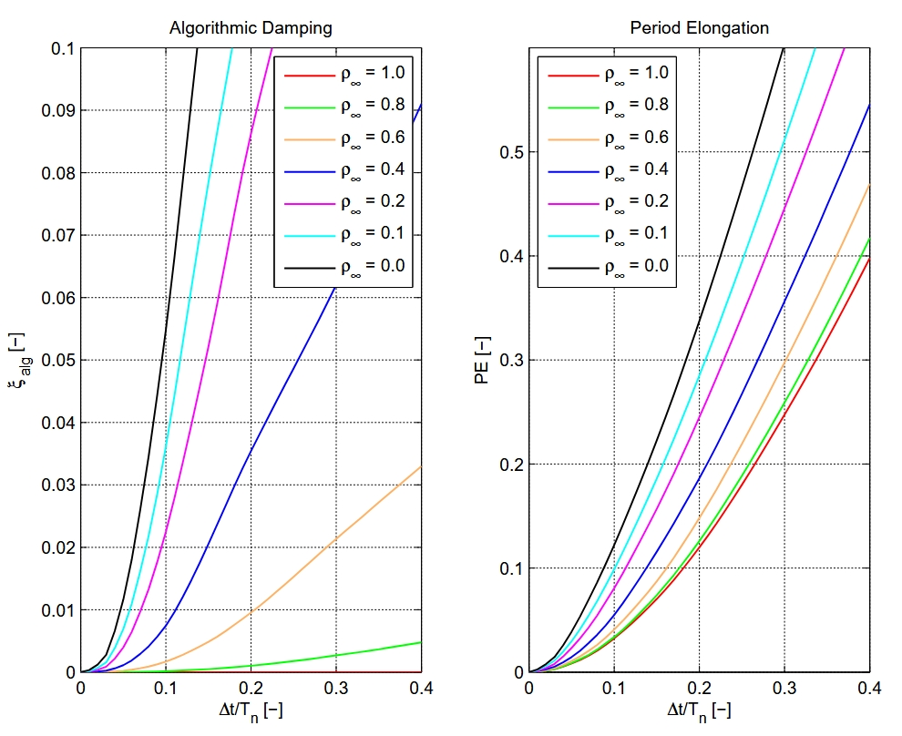
图 4.29 隐式广义-α (IGα) 和广义-α-OS (GαOS) 方法的算法阻尼比和相对周期误差。
上面介绍并在下一小节中总结的所有直接积分方法都已在 Open System for Earthquake Engineering Simulation, OpenSees (McKenna 1997) 有限元软件中实现，并可供用户在執行混合仿真时求解运动方程。
4.4.8 特殊要求总结
表 4.3 直接积分方法特殊要求总结。
要求 |
ENM |
EGα |
INM1 |
INM2 |
IGα1 |
IGα2 |
GαOS1 |
GαOS2 |
|---|---|---|---|---|---|---|---|---|
1. \(p \ge 2\) 阶精度 |
\(p=2\) |
\(p=2\) |
\(p=2\) |
\(p=2\) |
\(p=2\) ⁽¹⁾ |
\(p=2\) ⁽¹⁾ |
\(p=2\) ⁽¹⁾ |
\(p=2\) ⁽¹⁾ |
2. 每个时间步 \(\Delta t\) 的函数调用次数少 |
1 |
1 |
\(k_{\max}\) |
\(k_{\max}\) |
1 |
1 |
||
3. 无条件稳定 |
✓ |
✓ |
✓ |
✓ |
✓ ⁽²⁾ |
✓ ⁽³⁾ |
||
4. 常值 \(\mathbf{k}_{\text{el,exp}}\)（显式弹性刚度） |
不适用 |
不适用 |
✓ |
✓ |
✓ |
✓ |
✓ |
✓ |
5. 算法阻尼 |
✓ |
✓ |
✓ |
✓ |
✓ |
|||
6. 位移增量 \(\Delta \mathbf{U}\) 严格单调增/减 |
不适用 |
不适用 |
✓ |
✓ |
✓ |
✓ |
不适用 |
不适用 |
7. 位移增量 \(\Delta \mathbf{U}\) 均匀 |
不适用 |
不适用 |
✓ |
✓ |
不适用 |
不适用 |
||
8. 支持实时计算 |
✓ |
✓ |
✓ |
✓ |
✓ |
✓ |
注释： (1) 加速度仅为 \(p=1\) 阶精度 (2) 仅当 \(\delta \mathbf{K} = \mathbf{K}_i - \mathbf{K}_t\) 为半正定时成立 (3) 仅当 \(\delta \mathbf{K} = \mathbf{K}_m - \mathbf{K}_t\) 为半正定时成立
4.5 龙格-库塔方法
龙格-库塔方法属于单步法类。这意味着只需要当前时间 \(t _ { i }\) 的解状态来计算 \(t _ { i } + \Delta t\) 处的新解。如前所述，这些求解方案旨在求解一阶常微分方程，这要求像运动方程这样的高阶微分方程在应用龙格-库塔方法之前需要转换为一阶微分方程组。它们本质上是稳定的，并且可以是显式或隐式的。龙格-库塔方法的目标是构建一系列 s 个阶段，逼近 \(t _ { i }\) 和 \(t _ { i + 1 }\) 之间的向量函数 \(\mathbf { f } ( t , \mathbf { y } )\)，然后使用这些阶段的线性组合将数值解推进到新时间步 \(t _ { i + 1 }\)。
应用龙格-库塔方法的一阶常微分方程组是一个具有以下形式的初值问题。
在 Runge (1895) 和 Heun (1900) 基于欧拉方法构建了数值方案之后，Kutta (1901) 公式化了现在称为龙格-库塔方法的广义方案。该方法有 s 个阶段，表示如下。
对于完全隐式龙格-库塔方程，一种在实现上具有数值优势的替代形式如下。
其中 \(\mathbf { A } = [ a _ { m n } ]\) 和 \(\hat { \mathbf { b } } ^ { T } = \mathbf { b } ^ { T } \mathbf { \Lambda } \mathbf { A } ^ { - 1 }\)。因为 A 需要是非奇异的才能求逆，所以这种形式的方程仅适用于完全隐式方法。最后，通常用 Butcher 数组来象征性地表示龙格-库塔方法，如下所示。
如前所述，二阶运动方程必须转换为一阶微分方程组，为方便起见在此重复。
其中 \(\mathbf { y } = \left\{ \mathbf { U } \left( t \right) , \dot { \mathbf { U } } \left( t \right) \right\} ^ { T }\) 是包含结构位移和速度的堆叠向量。
4.5.1 显式方法 (ERK)
对于显式龙格-库塔方法，A 是严格下三角矩阵（\(\because a _ { m n } = 0 \forall n \geq m )\)，并且方程 (4.84) 只是在不同参数处求值。不幸的是，所有这些显式算法都需要求质量矩阵 M 的逆，因此它们不能用于分析具有奇异质量矩阵的结构问题。此外，没有一种 ERK 方法是 A-稳定的。接下来总结几种流行的 ERK 方法及其 Butcher 数组。
Runge (ERK2):
显式 Runge 方法是一致的，精度阶为 \(p = 2\)，满足要求 1。由于该方案有两个阶段，每个时间步需要两次函数调用。这意味着与前面讨论的任何二阶显式直接积分方法相比，每个时间步需要多一次函数调用。
内容解读(非翻译，自己添加) 这是二阶 Runge-Kutta 方法（改进欧拉法/Heun 法的一种形式），也叫中点法，属于常用的显式时间积分算法。 核心信息 Butcher 表：右侧的表格是 Runge-Kutta 方法的标准 Butcher 表，其结构为 $\( \begin{array}{c|c} c & A \\ \hline & b^T \end{array} \)\( 其中： \)c = [0,\ \tfrac{1}{2}]^T\(：阶段节点的时间系数，对应 \)t_i\( 和 \)t_{i+1/2}\( \)A = \begin{bmatrix}0 & 0 \[2pt] \tfrac{1}{2} & 0\end{bmatrix}\(：阶段系数矩阵 \)b^T = [0,\ 1]\(：权重系数向量 **算法流程**： (1)计算初始斜率 \)\mathbf{k}_1 = \mathbf{f}(t_i, \mathbf{y}_i)\( (2)用中点预测更新，计算中点处的斜率 \)\mathbf{k}_2 = \mathbf{f}\left(t_i+\frac{\Delta t}{2},\ \mathbf{y}_i+\frac{\Delta t}{2}\mathbf{k}1\right)\( (3)用中点斜率做最终更新：\)\mathbf{y}{i+1} = \mathbf{y}_i + \Delta t \mathbf{k}_2$>
Heun (ERK3):
显式 Heun 方法是一致的，精度阶为 \(p = 3\)，因此满足要求 1。该方法每个时间步需要三次函数调用。由于它比任何直接积分方法都更精确，因此是一个极好的替代方案。
Runge-Kutta 3/8 法则 (ERK4b):
显式 3/8 法则是一致的，精度阶为 \(p = 4\)，满足要求 1。根据四个阶段，该方法每个时间步也需要四次函数调用。然而，最后阶段确定了当前时间步结束时导数的近似，而第一阶段确定了新时间步开始时导数的近似。这意味着在 \(t _ { i + 1 }\) 处获取了两次抗力，这对于产生严格递增或递减且均匀的位移增量（如要求 6 和 7 所述）并不理想。
为了研究所施加到结构试验部分的位移指令信号的连续性和均匀性，通过不同的显式龙格-库塔积分方法分析了一个两自由度单跨框架模型。该单跨框架模型等同于用于快速地理分布式混合
仿真（见第 6 章）的模型。它由两个柱单元和一个相当柔性的线弹性桁架单元连接而成。左侧非线性柱进行试验测试，而右侧线弹性柱进行解析建模。该模型只考虑材料非线性，意味着忽略由轴力引起的几何非线性。图 4.30 显示了在不同 ERK 方法下，试验单元受控自由度上三个积分时间步内的位移指令信号特写。
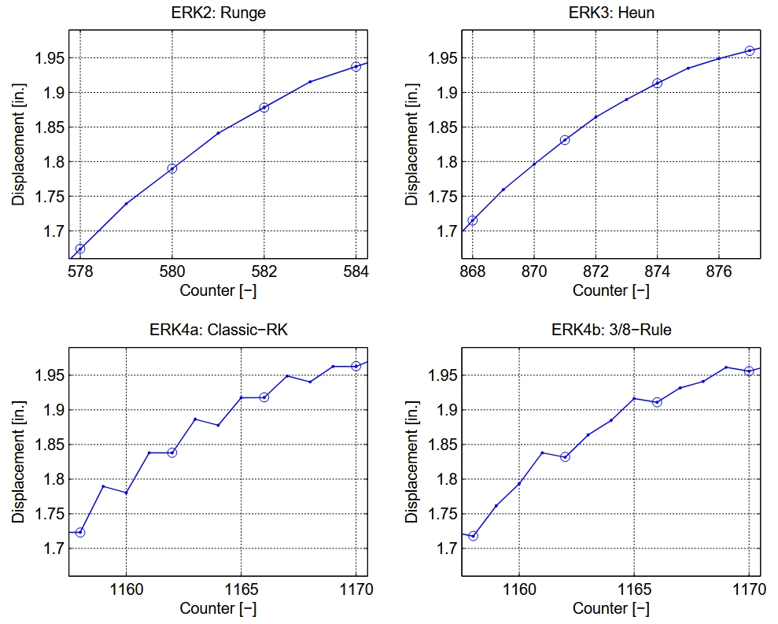
图 4.30 单跨框架模型的 ERK 收敛比较。
从图中可以看出，二阶 Runge 方法和三阶 Heun 方法产生了非常光滑和均匀的位移指令。另一方面，两种四阶方法的指令位移既不是严格递增也不是均匀的。根据时间增量向量 \(\mathbf { c } ^ { T } = \{ 0 , \ 1 / 2 , \ 1 / 2 , \ 1 \}\)，经典 RK 方法在 \(t _ { i + 1 / 2 }\) 和 \(t _ { i + 1 }\) 处两次生成双重位移指令，而 3/8 法则方法（\(\mathbf { c } ^ { T } = \{ 0 , \ 1 / 3 , \ 2 / 3 , \ 1 \}\)）仅在 \(t _ { i + 1 }\) 处生成一次。由于阶次条件，任何阶次 \(p \geq 4\) 的显式龙格-库塔
方案都需要在 \(t _ { i }\) 和 \(t _ { i + 1 }\) 处的两个阶段。这意味着在同一个时间实例 \(t _ { i + 1 }\) 处，位移指令不可避免地生成并发送到结构的试验部分两次。因此，这些高阶显式龙格-库塔方法不应被用于混合仿真。然而，对于纯解析结构的分析，由于其更高的精度，这些方法是引人注目的数值积分方案。
最后，用于混合仿真的优选显式龙格-库塔方法总结为图 4.31 中的伪代码。该实现只是包括根据方程 (4.86) 对每个时间步的三个阶段进行求值。
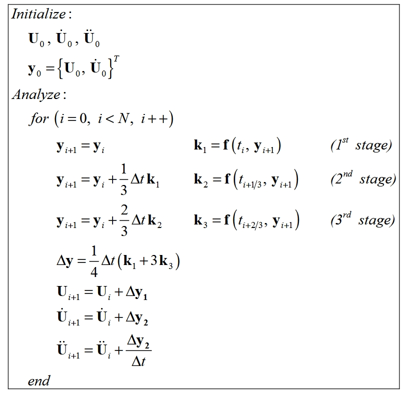
图 4.31 显式三阶 Heun (ERK3) 方法。
4.5.2 隐式方法 (IRK)
由于在结构动力学问题中质量矩阵通常是奇异的，这意味着显式龙格-库塔方法不能应用，接下来讨论可以绕过这个问题的隐式龙格-库塔方法。首先总结几种 IRK 方法，包括它们的 Butcher 数组。之后，以 2 阶段 Gauss 方法为例，解释应用于运动方程的隐式龙格-库塔方法的推导。所有其他低阶隐式方法都遵循相同的推导。
中点法则 (IRK2a):
隐式中点法则是一致的，精度阶为 \(p = 2\)，因此满足要求 1。由于该方法只包含一个阶段，每个时间步的函数求值次数等于达到收敛所需的迭代次数。
梯形法则 (IRK2b):
与隐式中点法则一样，隐式梯形法则也是一致的，精度阶为 \(p = 2\)。因此它满足要求 1。但它包含两个阶段而不是一个，这意味着它每个时间步所需的函数求值次数是隐式中点法的两倍。应该注意到，通过一些代数运算，可以证明隐式梯形法则等价于隐式恒定加速度 Newmark 方法。
从 (4.90) 的第二个公式中，恢复了时间 \(t _ { i + 1 }\) 处的平衡方程。
因为第二阶段等于 \(\mathbf { k } _ { 2 } = \mathbf { f } \left( t _ { i + 1 } , \mathbf { y } _ { i + 1 } \right)\)，将 \(\dot { \mathbf { y } } = \mathbf { f }\) 代入隐式梯形法则 (4.89) 得到以下表达式。
这两个方程显然等价于 \(\beta = 1 / 4\) 和 \(\gamma = 1 / 2\) 时 Newmark 的有限差分公式 (4.13)。
2 阶段 Radau IA (IRK3):
Radau IA 方法基于左 Radau 求积公式。这使得这些算法的精度为 \(2 s - 1\) 阶。2 阶段方案定义如下。
隐式 2 阶段 Radau IA 方案是一致的，精度阶为 \(p = 3\)，因此满足要求 1。
2 阶段 Gauss (IRK 4):
四阶 Hammer-Hollingsworth 方案属于基于高斯求积公式的方法类，这意味着 \(c _ { 1 } . . c _ { s }\) 是 s 次移位 Legendre 多项式的零点，精度阶为 \(2 s\)。
隐式 2 阶段 Gauss 方案是一致的，精度阶为 \(p = 4\)，因此满足要求 1。由于这是一个具有非奇异矩阵 A 的隐式算法，接下来将方程 (4.94) 转换为形式 (4.82)，以减少舍入误差的影响。从这两个阶段，得到以下以未知量 \(\mathbf { z }\) 表示的非线性方程组。
为了求解这个关于未知阶段 z 的非线性方程组，再次采用了著名的迭代 Newton-Raphson 算法。
在方程 (4.96) 中，质量矩阵的逆仍然存在。因此，第 2 行和第 4 行左乘质量矩阵，产生以下 Jacobian 矩阵。
有了方程 (4.96) 的所有部分，迭代可以从 \({ \bf z } ^ { ( k = 1 ) } = \{ { \bf 0 } \}\) 开始，这是一个足够接近实际解的起始向量。利用张量积，Newton-Raphson 迭代可以总结如下。
与任何迭代方法一样，Jacobian 矩阵可以在每次迭代时更新，或在时间步开始时更新，或在整个非线性动态分析过程中保持初始值不变。此外，可以只执行一次 Newton 迭代，这相当于线性隐式方法。一旦对时间步 \(t _ { i + 1 }\) 的线性方程组 (4.98) 的迭代过程收敛，响应量如位移、速度和加速度就根据方程 (4.99) 更新。最后，对整个 N 个时间步重复此过程，每个时间步内进行 Newton-Raphson 迭代，即可得到所求解。隐式 2 阶段 Gauss 方法总结为图 4.32 中的伪代码。
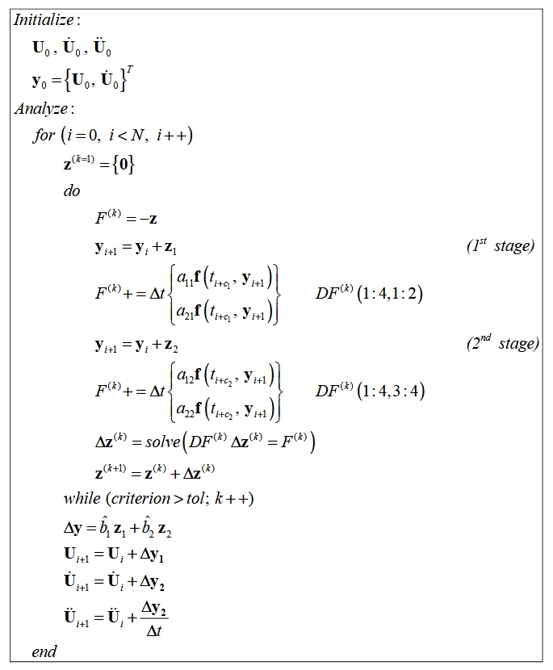
图 4.32 隐式 2 阶段 Gauss (IRK4) 方法。
再次通过分析采用不同隐式龙格-库塔积分方法的两自由度单跨框架模型，研究迭代过程中生成的位移指令的连续性和均匀性。图 4.30 显示了在不同 IRK 方法下，试验单元受控自由度上三个积分时间步内的位移指令信号特写。
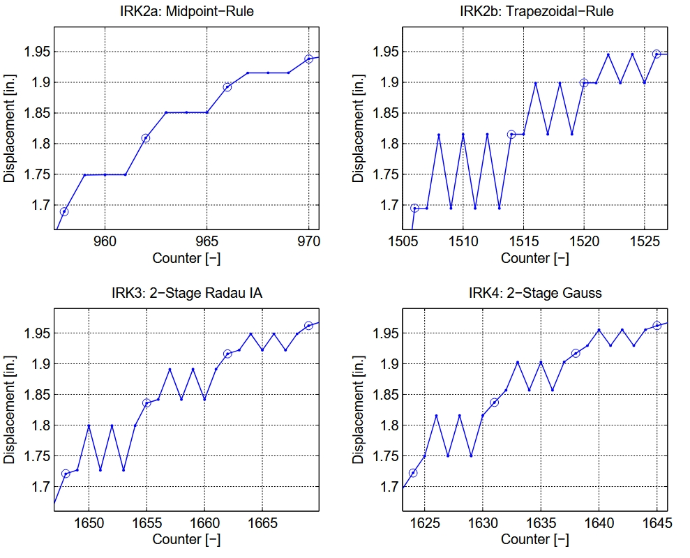
图 4.33 单跨框架模型的 IRK 收敛比较。
从图中可以看出，没有一种隐式龙格-库塔方法能产生严格递增且均匀的位移指令，这违反了混合仿真的要求 6 和 7。事实上，所有具有两个或更多阶段的隐式方法都会在迭代过程中产生广泛振荡的位移增量。这些振荡的发生是因为每个阶段在不同的时间增量处求值。因此，在每次迭代中，位移在所有不同的 \(t _ { i + c _ { m } }\) 处计算。这意味着所有具有两个或更多阶段的隐式龙格-库塔方法都不能用于混合仿真。此外，由于位移增量的非均匀性，1 阶段中点法则应仅在结合专门的事件驱动算法时用于混合仿真，就像 INM1 直接积分方法的情况一样。
然而，与高阶 ERK 方法一样，由于 IRK 方法具有更高的精度阶，对于纯解析结构的分析，它们是引人注目的数值积分方案。
4.5.3 Rosenbrock 方法 (RRK)
在上一节中，表明隐式龙格-库塔方法不能用于执行混合仿真中的动态分析，因为它们需要通过 Newton 迭代求解所得的非线性方程。因此，接下来研究另一类称为 Rosenbrock 方法的积分方案。Rosenbrock 方法是线性隐式龙格-库塔方法的推广，它将非线性方程组替换为一系列线性系统。它们将 Jacobian 矩阵直接纳入算法，而不是在迭代过程中求值。
对于非自治问题，如结构动力学中的问题，一般 s 阶段的 Rosenbrock 方法定义如下 (Hairer and Wanner 2002)。
其中额外的系数由下式给出
与单对角隐式龙格-库塔 (SDIRK) 方法类似，具有 \(\alpha _ { { \scriptscriptstyle m m } } = \alpha ~ \forall m\) 的 Rosenbrock 方案是特别感兴趣的，可以表示如下。
与 IRK 方法一样，第 2 行和第 4 行再次左乘质量矩阵，以消除对该矩阵求逆的需要，并使方案适用于具有
奇异质量矩阵的问题。在上式中，函数 f 对时间 \(t\) 和解向量 y 的导数由以下表达式近似。
Rosenbrock 方法由以下修改后的 Butcher 数组象征。
2 阶段 Rosenbrock (RRK2):
一旦从 Rosenbrock 方法应为 L-稳定的要求确定了参数 \(\alpha { = } 1 { - } \sqrt { 2 } / 2\)，其余参数的选择使得所有满足二阶精度的阶次条件 (Kaps & Wanner 1981)。L-稳定的 2 阶段 Rosenbrock 方法是一致的，精度阶为 \(p = 2\)，满足要求 1。
3 阶段 Rosenbrock (RRK3):
参数 \(\alpha = 0 . 4 3 5 8 6 5 2 1 5\) 再次从 Rosenbrock 方法应为 L-稳定的要求中确定。虽然大多数其他参数随后可以从三阶精度的阶次条件中确定，但 \(a _ { 3 1 }\) 和 \(a _ { 3 2 }\) 仍然可以自由选择
只要它们的和等于 \(c _ { 3 }\)。研究发现，当 \(a _ { 3 1 } = 2 / 3\) 和 \({ a _ { 3 2 } } = 0\) 时，L-稳定的 3 阶段 Rosenbrock 方法产生最平滑的位移指令。其余参数取值如下：\(\alpha _ { 2 1 } { = } 0 . 1 8 1 7 5 3 4 1 8 4\)，\(\alpha _ { 3 1 } = - 0 . 3 7 6 0 8 8 9 8 5 7\)，以及 \(\alpha _ { 3 2 } = - 0 . 2 0 5 0 6 6 3 7 6 4\)。L-稳定的 3 阶段 Rosenbrock 方法是一致的，精度阶为 \(p = 3\)，满足要求 1。
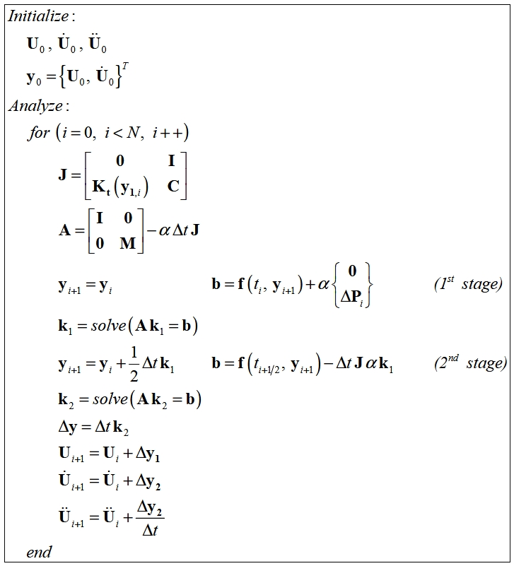
图 4.34 2 阶段 Rosenbrock (RRK2) 方法。
这两种 Rosenbrock 方法的实现需要在每个阶段求解一个线性方程组，其矩阵为 \(\mathbf { I } - \alpha \Delta t \mathbf { f } _ { , y }\)，该矩阵在每个时间步开始时更新。二阶方法总结为图 4.34 中的伪代码。三阶方法的实现遵循相同的模式。
再次通过分析采用不同 Rosenbrock 积分方法的两自由度单跨框架模型，研究迭代过程中生成的位移指令的连续性和均匀性。图 4.35 显示了在不同 RRK 方法下，试验单元受控自由度上三个积分时间步内的位移指令信号特写。
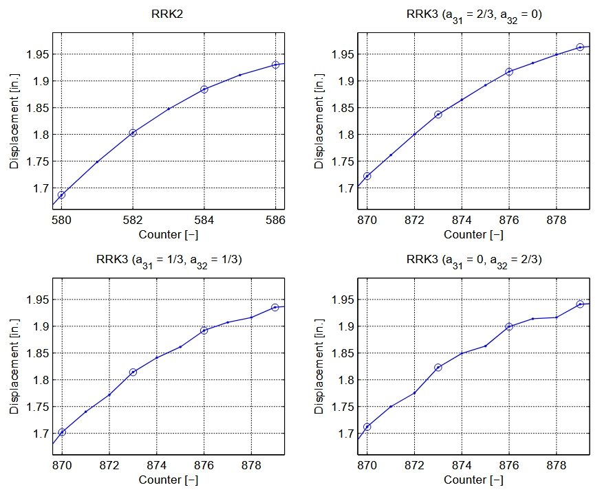
图 4.35 单跨框架模型的 RRK 收敛比较。
顶部的两个图显示了所提出的两种 Rosenbrock 方法下，试验柱接收到的位移指令。对于二阶和三阶方案，指令信号都是严格递增且非常平滑的。图 4.35 底部的两个图显示了三阶方法中自由参数 \(a _ { 3 1 }\) 和 \(a _ { 3 2 }\) 的其他选择下的位移指令。即使指令信号仍然是严格递增的，但增量明显不如所提出的参数
集那么均匀。所讨论的两种 Rosenbrock 方法都满足要求 6 和 7，因此是混合仿真的优秀积分方案。
4.5.4 稳定性
由于龙格-库塔方法是单步法，它们本质上是稳定的。这意味着只要选择足够小的时间步长，就是条件稳定，或者是无条件稳定。然而，接下来描述的概念被用来研究它们的稳定性范围。
A-稳定性：
如果一个初值问题的绝对稳定区域包含整个左半平面，则它是 A-稳定的。这意味着对于测试方程 \(\dot { y } = \lambda y\) 没有稳定性限制，适用于所有 \(\operatorname { R e } ( \lambda ) < 0\) ，\(\Delta t > 0\) 。这相当于直接积分方法的无条件稳定性。对于龙格-库塔方法，稳定性函数 \(R \left( z \right)\)（它决定了绝对稳定区域 RAS：\(\left| R \left( z \right) \right| < 1 )\) ）可以从以下方程中找到。
其中 \(z = \Delta t \lambda\)，e 是元素全为 1 的列向量，\(\mathbf { B } = \left[ a _ { m n } + \alpha _ { m n } \right]\)
L-稳定性：
如果一个方法满足以下条件，则它是 L-稳定的：(1) 必须是 A-稳定的，(2) 当 z 趋近于无穷大时，稳定性函数的极限必须趋近于零。
L-稳定方法具有快速阻尼刚硬分量的瞬态阶段的重要特性。因此，这个稳定性要求可以与直接积分方法所假设的、积分方案应提供一些算法阻尼的要求相比较。
B-稳定性：
最后，对于隐式龙格-库塔方法，非线性微分方程的稳定性由 B-稳定性性质决定。如果龙格-库塔方法是代数稳定的，那么它们是 B-稳定的。对于代数稳定性，以下两个矩阵必须是半正定的。
绝对稳定区域 (RAS):
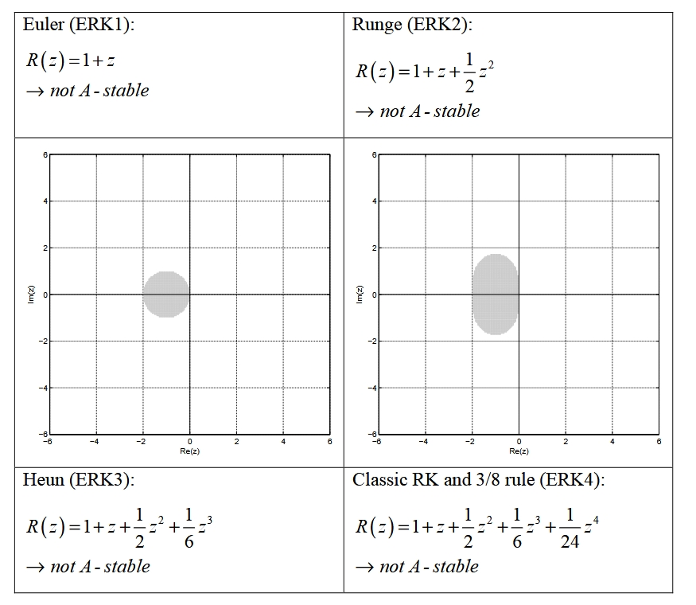
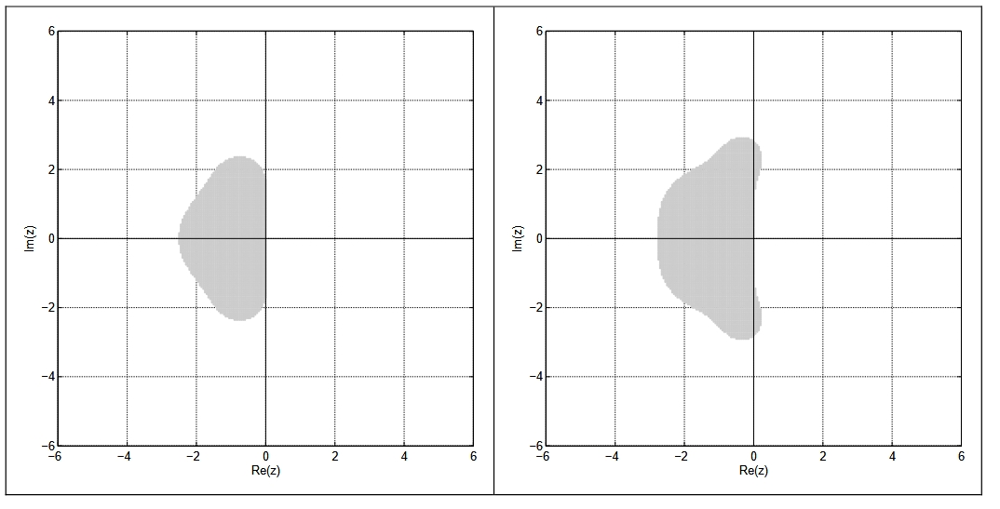
图 4.36 ERK 方法的绝对稳定性区域 (RAS)
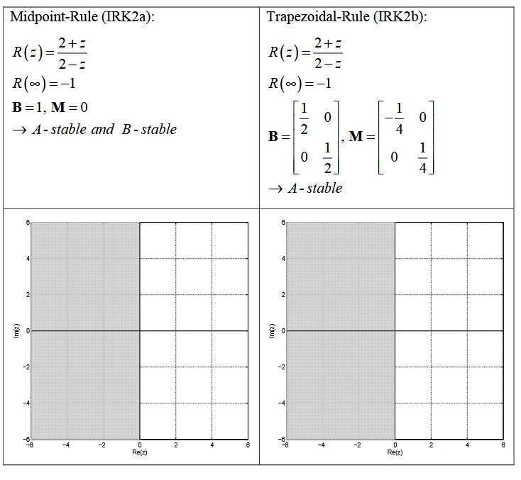
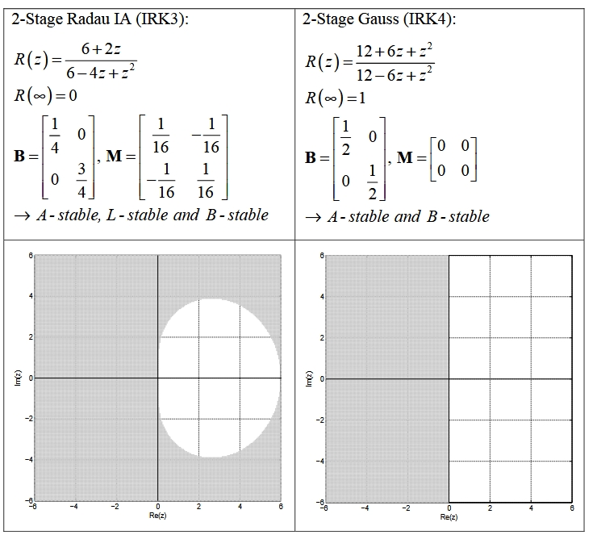
图 4.37 IRK 方法的绝对稳定区域 (RAS)。
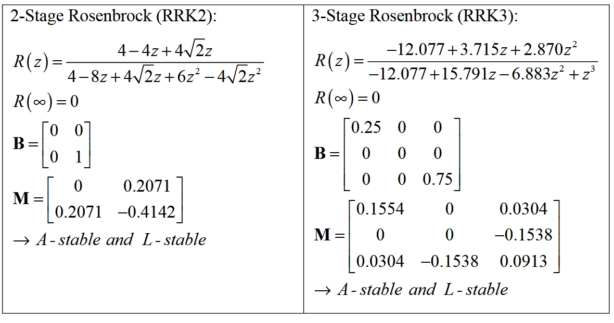
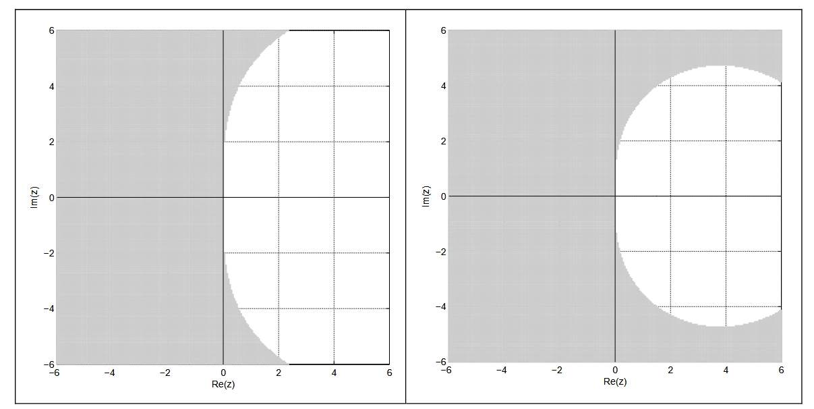
图 4.38 RRK 方法的绝对稳定区域 (RAS)。
4.5.5 精度：数值耗散和色散
与直接积分方法一样，龙格-库塔积分方案的精度再次以两种度量来评估：数值耗散和色散。同样，这些精度度量从仿真结果中获得。因此，对所有龙格-库塔方法执行线弹性单自由度系统的自由振动测试，以确定它们的数值耗散和色散特性。SDOF 系统的周期为 \(T = 1 \mathrm { s e c }\)，由初始位移 \(\mathbf { U _ { 0 } } = 1\) 英寸和初始速度 \(\dot { \mathbf { U } } _ { \mathbf { 0 } } = 0\) 英寸/秒激励，这意味着 \(\mathbf { y } _ { 0 } = \left\{ 1 , 0 \right\} ^ { T }\) 成为所有龙格-库塔方法的起始向量。
下一张图比较了相关龙格-库塔积分方法的两个精度度量，即算法阻尼比和相对周期误差。可以看出，三阶 ERK3 方法在中频模式中提供了大量的算法能量耗散，并在整个频率范围内缩短了模式。四阶 ERK4 方法在低频模式中不提供数值阻尼，但对于高频模式，算法阻尼的量迅速增加。此外，该方案在稳定性极限内非常精确，意味着相对周期误差很小。ERK4 方法延长了低频模式并缩短了高频模式。对于隐式龙格-库塔方法，二阶 ERK2a 方法达到了与二阶隐式 Newmark INM 方法相同的精度。
这意味着该方案不提供数值能量耗散，并在整个频率范围内延长模式。可以看出，该算法比高阶方法精度低，因为它显著延长了周期。三阶 IRK3 积分器实现了相当低的相对周期误差，同时由于算法的 L-稳定性，在高频模式中提供了所需的算法能量耗散。显然，四阶 IRK4 方法是所讨论方案中最精确的，但不幸的是不提供任何数值能量耗散来抑制高频振荡。最后，二阶和三阶 Rosenbrock 方法实现了良好的精度，具有相对较小的周期误差，并且由于其 L-稳定性，在高频模式中具有所需的算法阻尼。
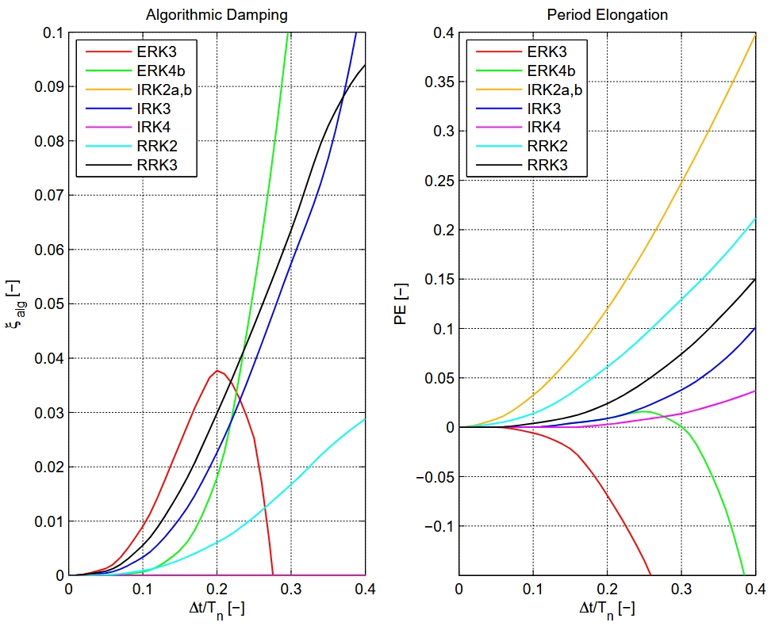
图 4.39 龙格-库塔方法的算法阻尼比和相对周期误差。
上面介绍并在下一小节中总结的所有龙格-库塔方法目前仅使用 Matlab (Mathworks) 实现。然而，有计划在不久的将来将这些龙格-库塔方法实现到 OpenSees 有限元软件中。
4.5.6 特殊要求总结
表 4.4 龙格-库塔积分方法特殊要求总结。
要求 |
ERK3 |
ERK4b |
IRK2a |
IRK2b |
IRK3 |
IRK4 |
RRK2 |
RRK3 |
|---|---|---|---|---|---|---|---|---|
1. 阶数 ≥ 2 |
p = 3 |
p = 4 |
p = 2 |
p = 2 |
p = 3 |
p = 4 |
p = 2 |
p = 3 |
2. 每个 Δt 的函数调用次数少 |
3 |
4 |
2 |
3 |
||||
3. 无条件稳定 |
✓ |
✓ |
✓ |
✓ |
✓ |
✓ |
||
4. 常数 \(k_{el,exp}\) |
不适用 |
不适用 |
✓ |
✓ |
✓ |
✓ |
✓ |
✓ |
5. 算法阻尼 |
✓ |
✓ |
✓ |
✓ |
✓ |
|||
6. ΔU 严格单调（增加/减少） |
✓ |
✓ |
✓ |
✓ |
||||
7. ΔU 一致（均匀） |
✓ |
✓ |
✓ |
|||||
8. 实时计算兼容 |
✓ |
✓ |
✓ |
4.6 总结
本章介绍了一系列广泛的积分方法及其对混合仿真的适用性。直接积分方法和龙格-库塔方法都得到了研究。在简要介绍了结构动力学问题的空间和时间离散化之后，提出了混合仿真可靠、准确、快速执行所需的积分方案特殊性质。研究表明，只要能够满足其稳定性极限，显式、非迭代方法就非常适合混合仿真并且易于实现。另一方面，已经证明，只有在以下两种条件之一满足时，才应将无条件稳定的隐式方法用于混合仿真：要么平衡解算法中的迭代次数可以固定为一个常数值，要么下一章描述的事件驱动算法需要调整在仿真过程中施加位移增量的时间间隔。此外，讨论了两种特殊类型的积分方案，即算子分裂方法和 Rosenbrock 方法。这些类型的方案能够在不需要迭代平衡解过程的情况下提供无条件稳定性。对于算子分裂方案，新引入了广义-α-OS 和修正的广义-α-OS 方法。研究还表明，对于混合仿真，积分方案最好能在高频模式中提供一定量的算法能量耗散，以抑制任何可能因试验误差而激发的虚假振荡。最后，以伪代码形式总结了积分方法，以辅助软件实现。